With 83 teams from 34 countries all competing in the Aramco STEM Racing World Finals 2025, there's some fantastic stories of innovation, dedication and talent to celebrate
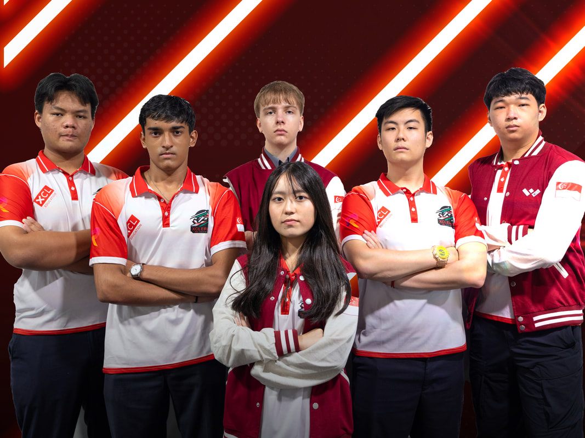
TO1:EXCELERATE RACING COUNTRY: SINGAPORE SCHOOL: XCL WORLD ACADEMY
XCLerate Racing, from Singapore, is a six-member team aged 17. Formed to represent Singapore at the 2023 World Finals, they became National Champions in 2024. Their name combines “accelerate” and “XCL,” their school sponsor. Their car, XCL-Lithium, is named for reliability and solid performance, inspired by the Greek word “lithos.”
Development began after the 2024 Nationals, with six months of simulation and testing. Challenges included balancing IB studies with competition, solved through shared schedules and communication tools. Innovations include airflow redirection using wheel inertia and Assetto Corsa mods for sim racing. XCLerate Racing is unique for its strong school identity and national representation. Their proudest moment was winning Nationals with only two members present. Dream careers include engineering, fintech, and sustainable technologies. Their favourite moment was being interviewed on national radio, sharing their journey and inspiring others.
@xclerate_racing
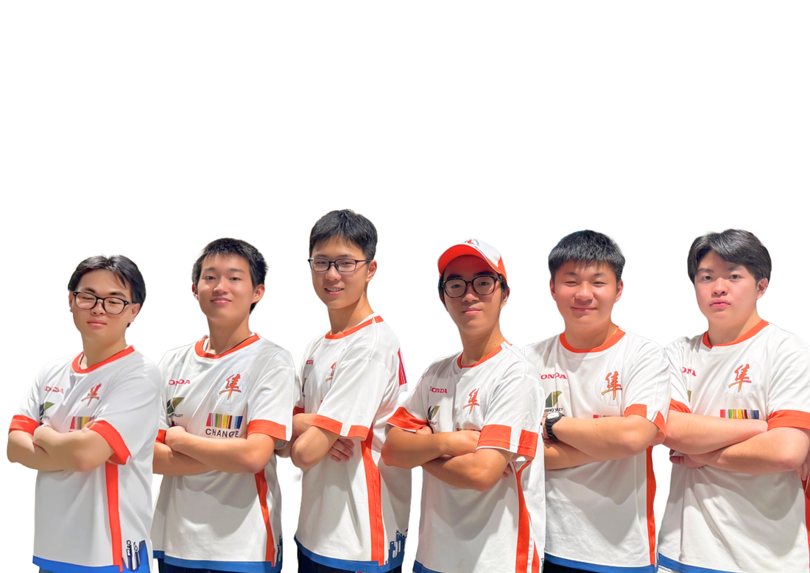
T02: CHANGE HOLDINGS Hayabusa Racing Country: JAPAN School: Independent Team
Based in Minato-ku, Japan, Hayabusa Racing is an independent team formed in January 2024. Led by Rona, a returning World Finals competitor, the team comprises six male students aged 16–17. Without school backing, they became Japan’s first fully sponsor-funded team. The name “Hayabusa” reflects speed and precision, inspired by the peregrine falcon and Japan’s bullet train. Their car, HB03, evolved from prototypes “Thunderbolt” and “Beyonder.”
Development began earlier this year, with major obstacles including low sponsorship response and lack of workspace. They overcame these through A/B testing, networking, and professional guidance. Hayabusa Racing stands out for its unique marketing, project management, and engineering approach, including genetic algorithms and race-start devices. Their mission is to promote project-based learning in Japan. Highlights include visiting Honda’s Sakura Factory and meeting F1 drivers. Their dream careers span engineering, aerospace, and entrepreneurship.
@_hayabusaracing

T03: Ascent Country: Germany School: Gymnasium Grootmoor
Ascent, from Gymnasium Grootmoor in Hamburg, Germany, is a six-member team aged 15–17. Formed in August 2024, they quickly rose through the ranks, winning regional and national awards including fastest car and best CAD. Their name, “Ascent,” reflects their goal to climb through competition levels and improve daily. Their car, Arrow3, continues a legacy of speed and precision. Though they don’t have a mascot, their logo features an upward-pointing arrow. Development began after the German National Finals in May. Funding was a challenge, but they secured sponsors in time. Innovations include an air-powered ball bearing testing system and a pit display racing game inspired by the Singapore Grand Prix. Ascent is unique for their clear organisation and optimistic approach, despite being in their first STEM Racing season.
@ascent.racing

T04: SBA Unity RacING Country: UNITED KINGDOM School: Scarborough University Technical College
SBA Unity Racing, from Scarborough, UK, is a dedicated team representing Scarborough Business Ambassadors. Comprising students with a passion for STEM and motorsport, they have steadily progressed through regional and national competitions. Their car, developed through months of teamwork and innovation, reflects their commitment to precision and performance. The team overcame challenges such as funding constraints and technical setbacks by fostering resilience and collaboration.
Notable innovations include advanced engineering solutions and a focus on sustainability. What makes SBA Unity Racing unique is their strong community spirit and drive to inspire future generations in Scarborough. Their proudest moment was qualifying for the World Finals, a testament to their hard work and determination. The team aspires to careers in engineering, business, and technology, and their favourite STEM Racing moment was celebrating their achievements together, united by a shared vision for success.
@sba.unity.racing
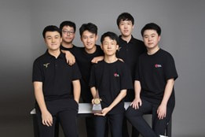
T05: Absolute Racing Country: China
Absolute Racing, from Beijing, China, is a six-member all-male team aged 16–17. Formed as a successor to Wings Racing, they carry a decade-long legacy in STEM Racing. Their name, “Absolute,” translates from the Chinese word “jue dui,” symbolising certainty and timeless excellence. Their car, Red Swallow, is inspired by the swallow’s speed and cultural significance, with its tail design resembling the bird’s silhouette. Their mascot, the Beijing Swallow, appears throughout their branding.
Development spanned 93 days, with obstacles including schoolwork and TOEFL exams. They adapted by prioritising tasks and supporting each other. Innovations include integrating modern project management with traditional Chinese strategy, wind tunnel testing, and mathematical modelling. Absolute Racing is unique for its mission to define car culture in China. Their proudest moment was connecting with Jim Glickenhaus during sponsorship outreach. Dream roles include dual careers in car design and engineering. Their favourite moment was winning at Nationals.
@absoluteracing_sdsz
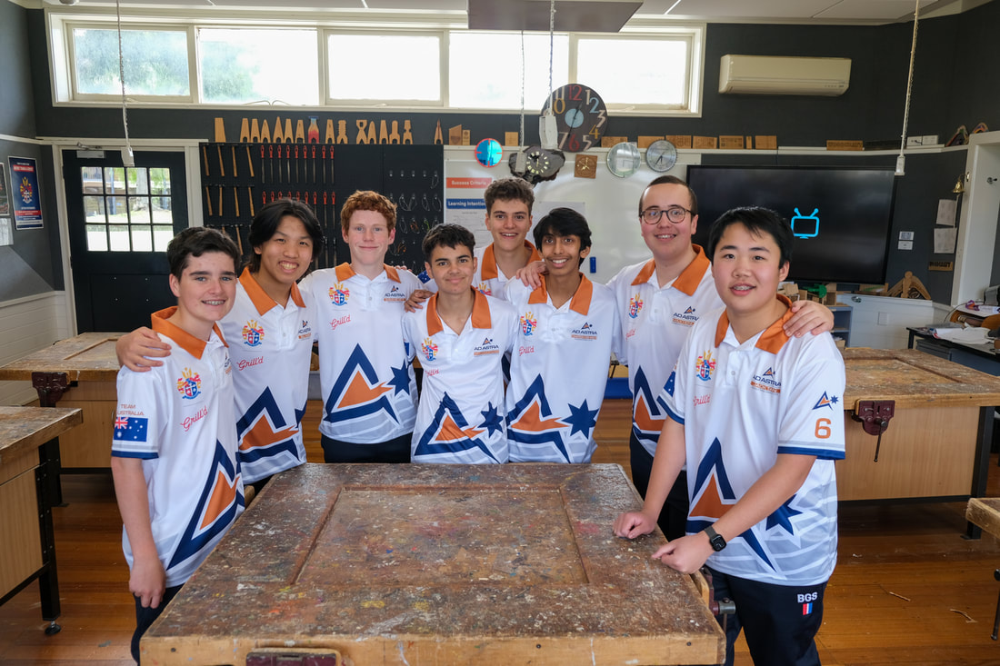
T06: Ad Astra Country: Australia SCHOOL: Brighton Grammar School
Ad Astra, from Brighton Grammar School in Australia, is a six-member team aged 14–16. Their name, Latin for “to the stars,” reflects ambition and resilience. Formed in late 2023, they’ve rapidly progressed from State Champions to World Finalists. Their car, Stella, symbolises guidance and excellence. Though they lack a mascot, their innovations shine - most notably, a Rear Wing Design Competition involving primary schools, now featured in their pit display.
Funding was a major hurdle, overcome through teamwork and outreach. Ad Astra’s strength lies in their unity and rapid ascent through competition levels. Their favourite experience has been meeting diverse teams and mentors across Australia. Dream careers include F1 engineering, strategy, and mechanics. Their journey from States to Nationals to Worlds in one campaign showcases their determination and collaborative spirit.
@adastraracing

T07: ALPHA SCUDERIA SESI SENAI SC Country: Brazil SCHOOL: Escola SESI Criciúma
ALPHA SCUDERIA, from Criciúma, Brazil, is a veteran team with a rich history in STEM Racing. Competing since 2020, they’ve earned awards for engineering, sustainability, and collaboration. Their name redefines “Alpha” as empathetic leadership, inspired by modern wolf pack research. Their car, W25-S, continues a naming tradition tied to year and location. Their mascot, Alphie - a pink and purple wolf - adds personality to their branding. Over six months, they developed their car while navigating stakeholder engagement, storytelling challenges, and supplier coordination. Innovations span software, engineering prototypes, and sustainability projects.
ALPHA SCUDERIA is unique for its legacy-driven approach and social impact. Their proudest moment was winning the National Finals 2025 after years of striving. Team members aspire to careers in engineering, marketing, and communication. They’re driven by a desire to leave a lasting legacy in STEM Racing.
@alpha.scuderia

T08: Daedalus Racing Country: Greece SCHOOL: Mandoulides Schools, Erasmeios Greek and German School, Ekpedeftiki Anagennisi
Daedalus Racing, based in Attica, Greece, is a collaborative team formed from three schools separated by over 500 kilometres. Despite the distance, they’ve built strong unity and a shared passion for motorsport. Their name, inspired by the myth of Daedalus, reflects creativity and ambition. Their car, also named Daedalus, symbolises speed and invention. Development began in April, with obstacles including limited access to race tracks. They overcame this by creating a Python programme to predict race times.
Innovations include a regulation-checking software, performance predictor, and smart testing tools. Daedalus Racing is unique for its outreach work, inspiring hundreds of students through STEM presentations and events. Their proudest achievement is hosting ten educational sessions and partnering with Circuit 27, Greece’s largest racetrack. Dream careers range from engineering to sports medicine and design. Their favourite moment was connecting with karting experts and building friendships through STEM Racing.
@daedalus_.racing

T09: Atalanta Racing Country: Cyprus SCHOOL: American Academy Larnaca
Atalanta Racing, from Larnaca, Cyprus, is a six-member team aged 17–18. Formed in September 2024, they became national champions in 2025. Their name honours the Greek goddess of speed, reflecting resilience and cultural pride. Their car, Goddess Atalanta, was developed over three months. Challenges included limited funding and suppliers, overcome through strategic resource management and international sourcing.
Innovations include forward-lofted front wing endplates to optimise finish-line detection and airflow. Atalanta Racing is unique for its identity-driven approach and commitment to excellence. Their proudest moment was qualifying for the World Finals. Dream careers include project management and engineering. Their favourite moment was submitting their final deliverables, marking the culmination of their efforts.
@atalanta.racing
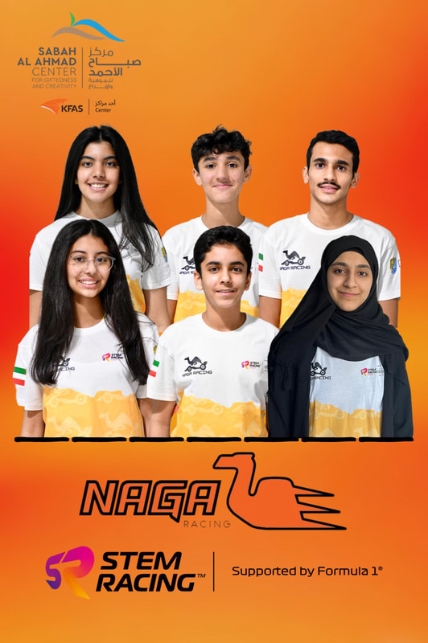
T10: NAGA Racing Country: Kuwait SCHOOL: SACGC
NAGA Racing, from Shuwakh, Kuwait, is a six-member team aged 14–17. Formed three months ago, they won first place at Nationals in their debut season. Their name, “NAGA,” refers to a serpent symbolising strength and resilience, rooted in Kuwaiti culture. Their car, NR-X1, is internally named for version tracking.
Development began post-Nationals, with a month and a half of refinement. Challenges included competition delays, technical issues, and personal emergencies, overcome through coordination and extra effort. Innovations include a new wing design, recycled uniforms, and heritage-inspired branding. NAGA Racing is unique for its cultural integration and sustainability focus. Their proudest moment was winning Nationals and hosting Kuwait’s Prime Minister. Dream careers include roles in Formula 1 across engineering, marketing, and design. Their favourite moment was competing at Nationals and gaining national recognition, proving their potential on the global stage.
@nagaracingkw

T11: APEX Elegance Country: Macau SCHOOL: Macao Science Center
Apex Elegance, the first international STEM Racing team from Macau, was founded in August 2024. Their name blends “Apex” for precision and “Elegance” for refined execution, reflecting their design philosophy: “Simple. Complex. Elegant.” Their car, Zenith, symbolises peak performance. Their mascot, a royal purple cat, adds charm and agility to their branding. Over eight months, they developed a modular pit display and sustainable materials, solving transport challenges with clever design.
Their innovations include recycled tea leaf boards, parameterised CAD, and analytics-driven project management. Apex Elegance stands out for merging Macau’s racing heritage with modern sustainability. Their proudest moment was outperforming top teams with an unfinished car that ran the fastest time of the day. Team members aim for careers in engineering and design. Their journey proves that resilience and preparation can turn setbacks into triumphs.
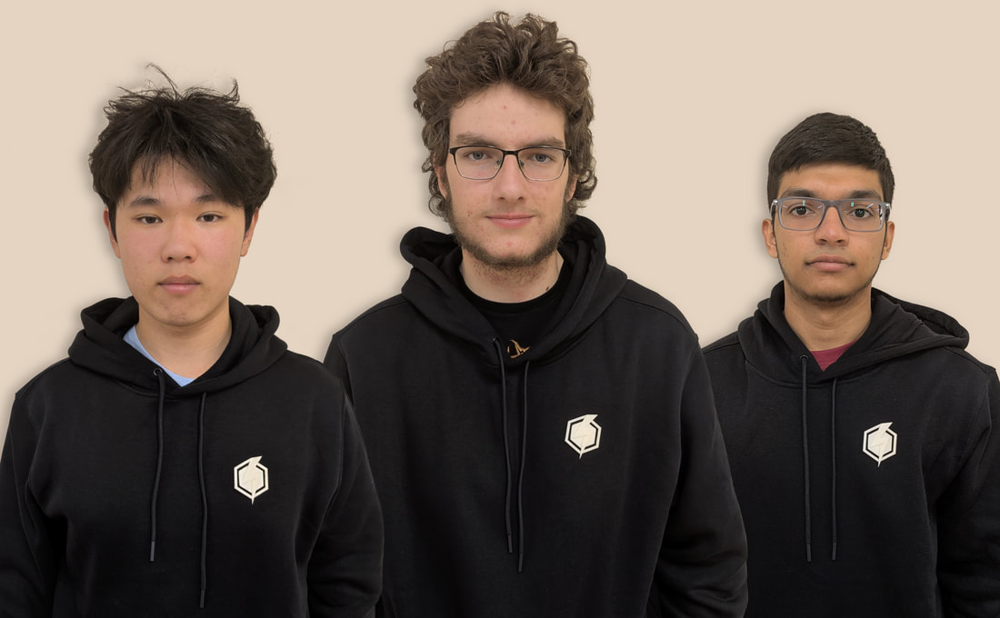
T12: Blitz Racing Country: Ireland SCHOOL: Marist College Athlone
Blitz Racing, from Athlone, Ireland, is a three-member all-male team aged 17–18. Formed in late 2024, they won the Irish National Finals and Best Pit Display. Their name, “Blitz,” means lightning in German, symbolising speed and power. Their car, Sionna MK.2, is named after the Irish goddess of the River Shannon, connecting their design to local heritage.
Development involved over 130 hours of CAD modelling and extensive testing. Innovations include a unique three-ramp front wing and strategic virtual cargo placement. Blitz Racing is unique for its bold branding and cultural integration. Their proudest moment was winning Nationals. Dream careers include aerospace engineering, medicine, and design. Their favourite moment was hearing their name announced as champions, validating their hard work.
@blitzracing2024

T13: SVT Racing Country: Thailand SCHOOL: King's College International School Bangkok
SVT Racing, from Bangkok, Thailand, is a five-member team aged 16–17. Formed through the FOBISIA STEM competition, they placed in the top three at Nationals. Their name comes from the physics equation s = vt, symbolising speed and efficiency. Their car, Black Necromancer, is inspired by Star Wars and reflects their ambition to create an impossibly fast design.
Development spanned over seven months, with challenges in engineering skill gaps, resolved through training. Innovations include underbody fins applying Bernoulli’s principle for improved traction. SVT Racing is unique for its close-knit team dynamic and shared classroom history. Their proudest moment was producing their first World Finals car. Dream careers include theoretical physics and engineering. Their favourite moment was drawing inspiration from Team Infinitude’s world record car, motivating them to push boundaries.
@svtracingf1
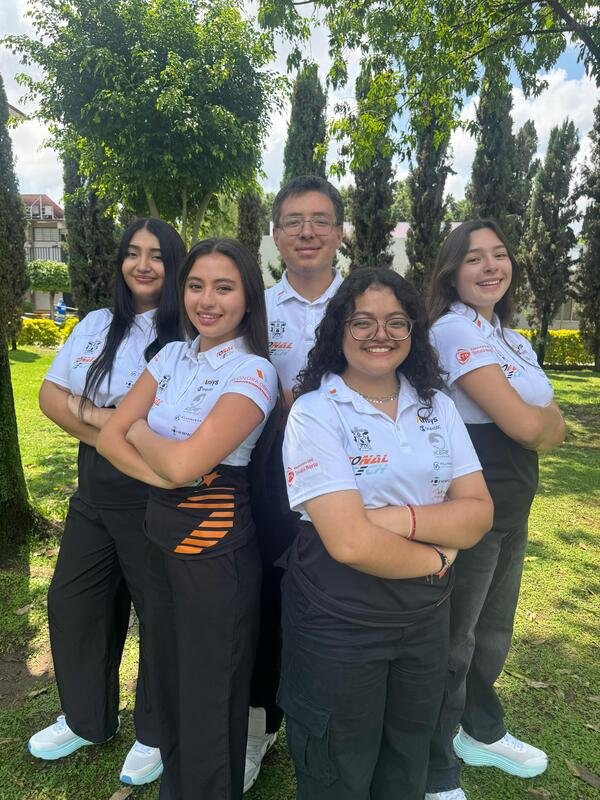
T14: TONALTECH Country: Mexico SCHOOL: Escuela Preparatoria Regional de Tonalá Norte
TONALTECH, from Tonalá, Mexico, is a five-member team aged 17–19. Competing since 2016, they’ve won six national championships and two international awards. Their name combines “Tonalá” and “Tech,” reflecting their mission to inspire youth through technology. Their car, Maxa, is named after the Wixárika word for deer, symbolising speed and cultural heritage.
Development began in April, with challenges in weight reduction, solved through extensive testing. Innovations include rear chevrons to reduce turbulence and improve airflow. TONALTECH is unique for its community commitment, aiming to leave a legacy for future teams. Their proudest moment was receiving the FIA Women in Motorsport Award and seeing their community celebrate their success. Dream careers include automotive engineering and racing. Their favourite moment was racing together and feeling the pride of representing their region.
@tonaltech

T15: ACERSWIFT Country: Malaysia SCHOOL: Kolej Yayasan Saad Melaka
ACERSWIFT, from Kolej Yayasan Saad Melaka in Malaysia, is a team of six 16-year-olds who’ve spent three years building their STEM Racing journey. Formed from classmates with diverse backgrounds and personalities, they overcame geographical and interpersonal challenges to qualify for the World Finals. Their name blends “Ace” and “Swift,” symbolising precision and speed. Their car, Ace-5, is the fifth iteration of their design legacy. The team’s mascot, a snake, represents agility and wisdom.
Innovations include an RFID-based Instagram keychain made from recycled plastic. ACERSWIFT stands out for its skill diversity - musicians, athletes, debaters, and scouts all contribute to a dynamic team culture. Their proudest moment was qualifying for the World Finals, a goal once considered impossible. They aspire to careers in engineering, medicine, and design, and cherish the collaborations they’ve built with universities and companies along the way.
@kys.acerswift
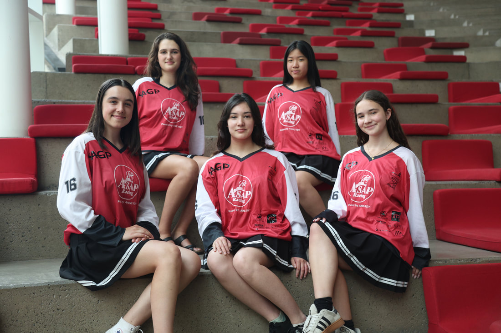
T17: ASAP Racing Country: Canada SCHOOL:Pensionnat Saint-Nom-de-Marie
ASAP Racing, from Montreal, Canada, is a five-member all-female team aged 16. Formed in June 2024, they placed second at Nationals and won six awards, including Best Engineered Car and Sustainability. Their name reflects urgency and empowerment, with a nod to feminism and Maria Teresa de Filippis. Development began in June 2025, with obstacles including resin shortages, solved through material substitution.
Innovations include self-made magazines documenting their journey and a pit display that tells their story. ASAP Racing is unique for its spirit of growth and passion over results. Their proudest moment was qualifying for the World Finals and proving their dedication. Dream careers include engineering, business, and media. Their favourite moment was realising their efforts led to national recognition, inspiring them to continue pushing boundaries and representing women in STEM.
@asap_racing_4
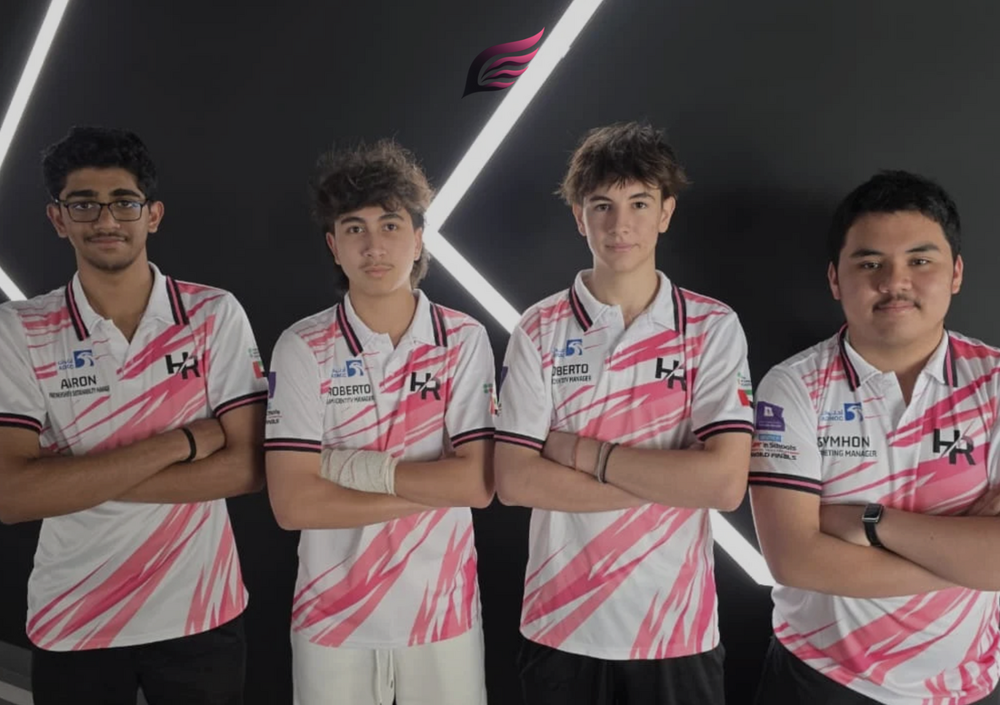
T18: Hermes Racing Country: United Arab Emirates SCHOOL: Raha International School Gardens Campus
Hermes Racing, from Abu Dhabi, UAE, is a four-member team aged 16–17. With four years of experience, they’ve competed in two World Finals and earned awards for marketing and engineering. Their name reflects Hermes, the messenger god, symbolising creativity and collaboration. Their car, Caduceus, was developed over three months. A major challenge was balancing schoolwork with competition deadlines, which they overcame through mentorship and scheduling.
Innovations include aerodynamic dimples and green energy initiatives. Hermes Racing is unique for its resilience and ability to collaborate remotely, especially during summer when the team was geographically separated. Their proudest moment was filming digital media content and partnering with a sustainability-focused company. Dream careers include film direction, engineering, and business leadership. Their favourite moment was the team photo at the World Finals pitlane, celebrating unity after competition.
@officialhermesracing
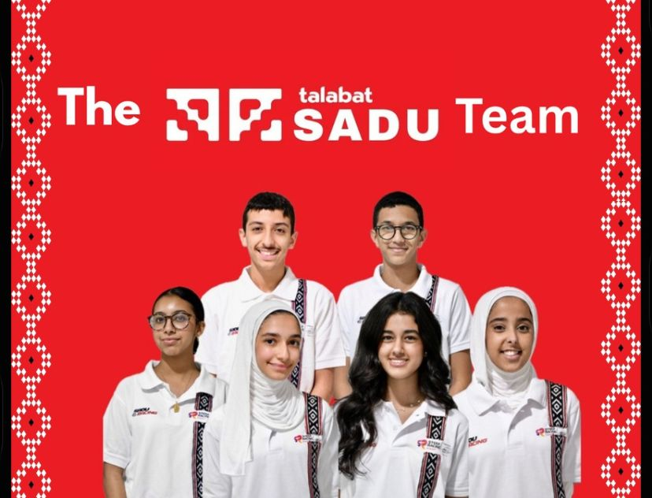
T19: Sadu Racing Country: Kuwait SCHOOL: SACGC
Sadu Racing, from Shuwakh, Kuwait, is a six-member team aged 15–17. Formed in 2025, they placed second at Nationals in their debut season. Their name, “Sadu,” reflects Kuwaiti heritage and ambition. Development began in August, with challenges including bearing misfits and budget limitations, solved through redesign and sponsorship outreach.
Innovations include Sadu-pattern branding, lightweight axle systems, and sustainable marketing. Sadu Racing is unique for blending tradition with STEM innovation, representing both cultural pride and technical progress. Their proudest moment was completing their car and qualifying for the World Finals. Dream careers include engineering and project management. Their favourite moment was watching their car race for the first time, a powerful symbol of achievement and teamwork. Sadu Racing aims to inspire future generations in Kuwait through STEM Racing and collaboration.
@sadu_racing
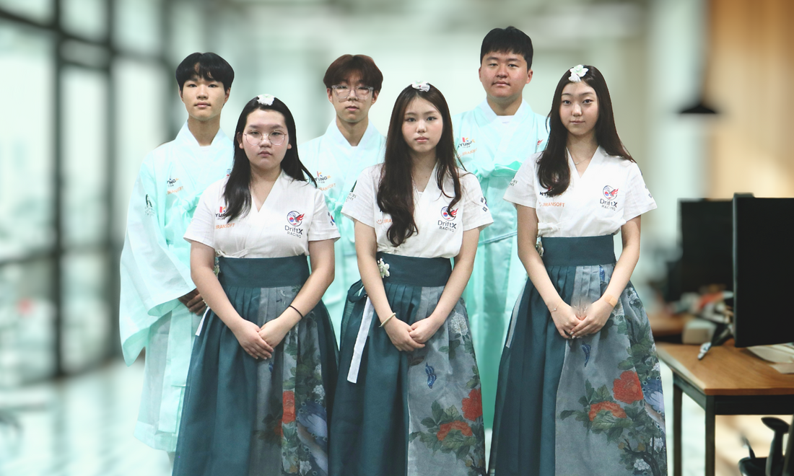
T20: DriftX Racing Country: Korea, Republic of SCHOOL: St. Johnsbury Academy Jeju
DriftX Racing, from Jeju Island, South Korea, is a six-member team aged 16–17. Though newly formed, members bring experience in engineering, design, and marketing. Their name reflects a desire to redefine motorsport in Korea, with “Drift” symbolising bold direction and “X” the unknown potential. Their car design draws inspiration from traditional Korean art, and development spanned four months.
Challenges included shipping delays and team absences, overcome through early planning and task distribution. Innovations include aerodynamic testing and a unique wing design. DriftX Racing is proud of its cultural identity, integrating Korean heritage into every aspect of the project. Their proudest moment was being selected to represent Korea at the World Finals. Dream careers include engineering, design, and economics. Their favourite moment was seeing their printed car for the first time - a symbol of teamwork and national pride.
@driftx_racing_
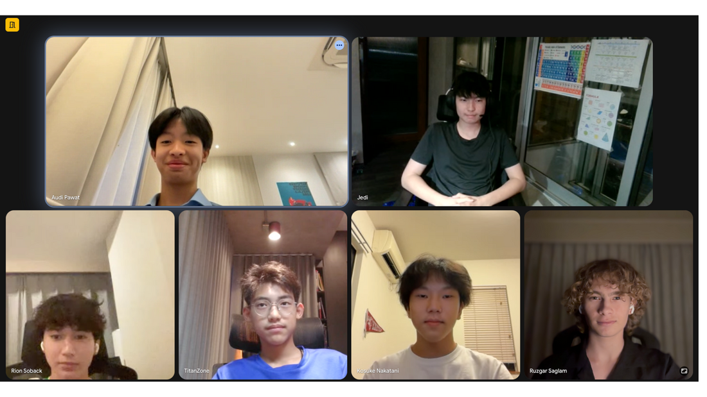
T21: IKEUCHI Fusion Force CountrIES: Japan & Thailand SCHOOLS: The American School in Japan, Satit Bilingual School of Rangsit University, Lertlah School
IKEUCHI Fusion Force is a six-member all-male team aged 12–16, formed through collaboration between schools in Japan and Thailand. Founded in April, they qualified for the World Finals after winning awards at the Thai Nationals. Their name, “Fusion Force,” symbolises unity across cultures and determination. Their car, Rook, is named after the chess piece, reflecting strategic strength.
Development lasted four months, with challenges in sponsorship, solved through emotional storytelling and live presentations. Innovations include a unique verbal presentation concept and rapid car development. Fusion Force is unique for its international makeup and rapid progress. Their proudest moment was securing sponsorships and building a high-performing car. Dream careers include roles in Formula 1, engineering, and marketing. Their favourite moment was winning the knockout competition in Thailand.
@fusionforce.sr

T22: Giddam Racing Country: Saudi Arabia SCHOOL: STEM Racing Saudi
Giddam Racing, from Khobar, Saudi Arabia, is a six-member team aged 15–17. Formed with the motto “Always one step GIDDAM,” they’ve competed for two years, earning recognition for marketing and engineering. Their name means “forward” in Arabic, symbolising speed and progress. Their car, Cupcake, and mascot, Giddamer, reflect their playful yet focused identity.
Development spanned nine months, with challenges in time management, sponsorship, and manufacturing. Innovations include aerodynamic wing profiles, eco-friendly materials, and interactive marketing strategies. Giddam Racing is unique for blending local culture with global standards, and for their strong teamwork and branding. Their proudest moments include securing sponsorships and seeing their car race successfully. Dream careers include engineering, marketing, and creative direction. Their favourite moment was launching their social media and seeing real engagement, proving their identity resonated with others.
@giddamracing

T23: JetPlex Racing Country: Poland SCHOOL: I Liceum Ogólnokształcące im. Stanisława Staszica w Pleszewie
JetPlex Racing, from Pleszew, Poland, is a four-member team aged 17–18. Founded in December 2023, they won the Polish National Championship in July 2024, securing their place at the World Finals. Their name combines “Jet” for CO₂ propulsion and “Plex” for their hometown. Their car, JetEagle, is inspired by Poland’s national emblem, the white eagle.
Development spanned 10 months, with challenges including fragile 3D prints and currency fluctuations. Innovations include in-house 3D printing, CNC access, and digital project management tools. JetPlex Racing stands out for its social responsibility, including tree planting to offset carbon emissions and outreach to children’s homes. Their proudest moment was showcasing their project at the Poznań Motor Show. Dream careers include engineering, psychology, and entrepreneurship. Their favourite moment was organising a Christmas charity event, demonstrating their commitment to community impact.
@jetplexracing
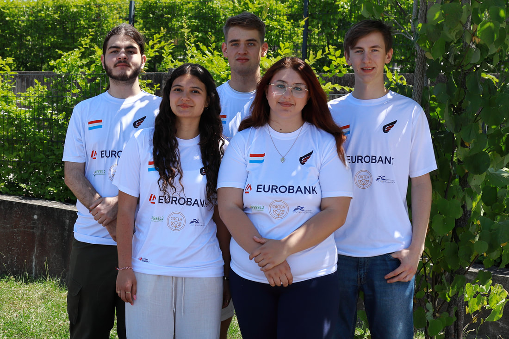
T24: ICARUS Country: Luxembour SCHOOL: European School Luxembourg 2
ICARUS, from Luxembourg, is a five-member team aged 17–19, representing European School Luxembourg 2. Formed in 2022, they’ve competed in three National Finals and won awards for fastest car, best logo, and judges’ favourite. Their name, inspired by Greek mythology, reflects ambition and calculated risk. Their car, C19c, is the third iteration of the C19 model. Though they lack a mascot, their pit display is highly innovative - built from aluminium profiles that double as a transport case.
Development began in July, with challenges including poorly documented thermal setups, solved through power supply adjustments. ICARUS is unique for its international diversity, with members from Czechia, Croatia, and Greece. Their proudest moment was qualifying for the World Finals, representing Luxembourg on the global stage. Dream careers include automotive testing, IT, aerodynamics, law, and finance. Their favourite moment was winning the Judges’ Favourite award at their first event.
@icarusluxembourg
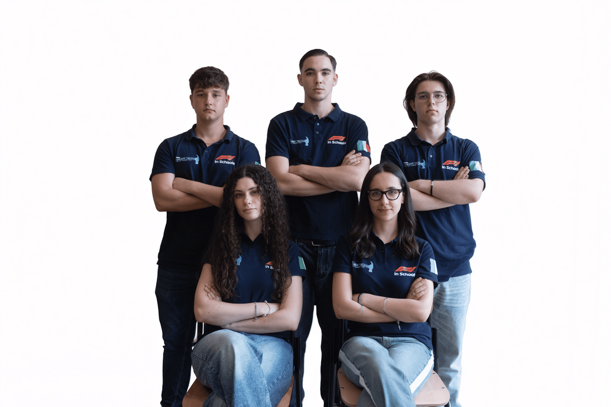
T25: Hammer Team Country: Italy SCHOOL: Liceo Scientifico Lorenzo Respighi
Hammer Team, from Piacenza, Italy, is a five-member team aged 18. Formed in November 2023, they won the National Championship and qualified for the World Finals. Their name is inspired by Lewis Hamilton’s “Hammer Time” radio call, symbolising determination and peak performance. Their car, CR-02, continues a naming tradition linked to an inside joke about a fictional driver. Their unofficial mascot is Harry, a cheerful dog belonging to their marketing manager.
Development began in January, with intense testing from August. Challenges included coordinating with multiple partners and tight deadlines, solved through data analysis and strategic planning. Innovations include social media collaborations with F2 drivers and refined engineering with F1 experts. Hammer Team is unique for its spontaneity and collaborative spirit. Their proudest moment was presenting at Expo 2025 in Osaka. Dream careers include engineering and marketing. Their favourite moment was winning Nationals at Dallara.
@_hammer.team_

T26: HAWK RACING QUERÉTARO Country: Mexico SCHOOL: Tec Milenio Querétaro
HAWK RACING QUERÉTARO, from Santiago de Querétaro, Mexico, is a six-member team aged 17–19. Formed in early 2024, they won the Development Class National Finals in their first season. Their name reflects vision, strategy, and pride in representing their state. Their car, HR 5 – Spartan LT, honours their first design and features a long tail.
Development spanned over a year, with challenges in sponsorship, solved through fundraising and community support. Innovations include a handcrafted carbon fibre rear wing and geometric deviation analysis. HAWK RACING is unique for its diversity and resilience. Their proudest moment was qualifying for the World Finals. Dream careers include working in Formula 1 and the automotive industry. Their favourite moment was watching last year’s award ceremony, inspiring their journey.
@hawk.racing.qro
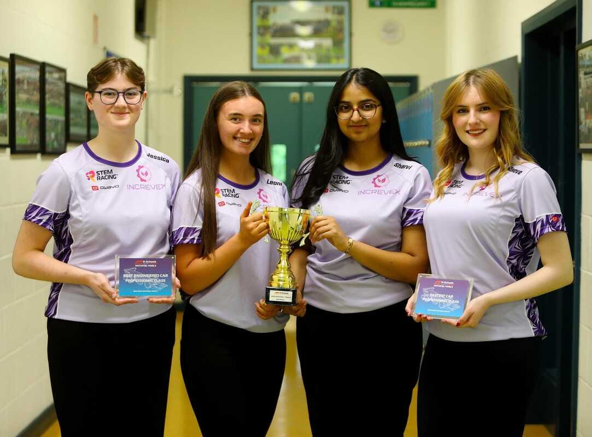
T27: Increvex Country: Ireland SCHOOL: St. Brigids College Loughrea
INCREVEX, from County Galway, Ireland, is a four-member all-female team aged 17–18. Formed in 2023, they placed second at Nationals and won awards for fastest car and best engineering. Their name combines “Incrementum” (Latin for growth) and “väx” (Swedish for grow), symbolising innovation and progress. Development spanned 16 months, with challenges balancing school and competition.
Innovations include a subtly engineered car design and a strong team identity. INCREVEX is unique for its focus on female empowerment and STEM outreach. Their proudest moment was securing a €20,000 CNC machine for their school, leaving a legacy for future students. Dream careers include managing an all-female F1 team. Their favourite moment was securing sponsorship from Valeo, a thrilling milestone that made their World Finals journey possible.
@increvex

T28: Eclipse Country: Australia SCHOOL: Wesley College
Eclipse, from Wesley College in Perth, Australia, is a six-member team aged 14–17. Competing since 2023, they’ve won multiple awards at State and National levels, including fastest lap and best engineered car. Their name reflects rarity and impact, aiming to leave a mark on STEM Racing. Their car, Dawnbreaker, symbolises new beginnings and disruption.
Development began in June, with major setbacks including a broken CNC machine, which they repaired themselves. Innovations include Eclipse AI, a regulation-navigating tool built using Copilot and trained on official documents. Eclipse is unique for its dedication, often working late into the night and sacrificing free time to perfect their car. Their proudest achievement was placing second at the 2025 Australian Nationals, climbing seven places from the previous year. Dream careers span various Formula 1 roles. Their favourite moment was being selected for Team Australia at the World Finals.
@eclipse.wa
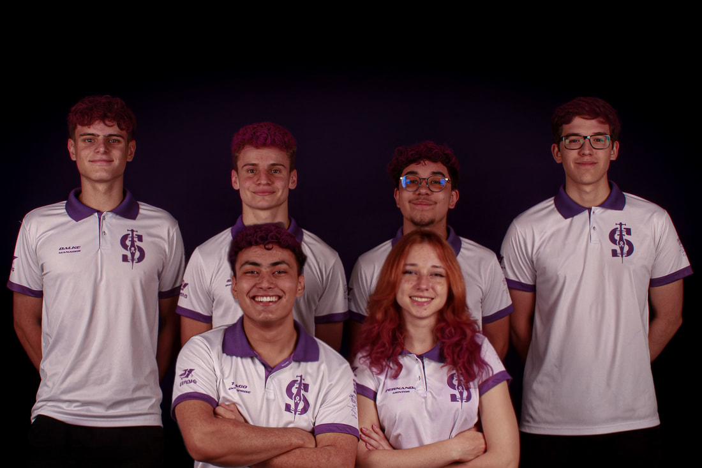
T29: Siam AI Arun Racing Country: Thailand SCHOOL: International Community School & King’s College International School Bangkok
Siam AI Arun Racing, from Bangkok, Thailand, is a six-member team aged 14–15. Formed six months ago, they were selected as a wildcard team for the World Finals. Their name, “Arun,” means sunrise in Thai, symbolising new beginnings and growth. Their car, Blaze, reflects speed and passion, while their digital avatars serve as mascots.
Development began in April, with a major challenge being the departure of their design engineer. They overcame this by training both engineers to collaborate on the final design. Innovations include a self-tightening axle system for improved reliability. Arun Racing is unique for its youth, energy, and determination to prove themselves. Their proudest moment was securing a title sponsor, which boosted morale and resources. Dream careers include corporate leadership and engineering. Their favourite moment was appearing on national television to promote STEM Racing and inspire future innovators.
@arun__racing

T30: Echo Racing Country: Germany SCHOOL: Theodor-Mommsen-Schule Bad Oldesloe
Echo Racing, from Bad Oldesloe, Germany, is a four-member team aged 17–18. Formed in 2023, they quickly rose through regional and national competitions, winning awards for engineering, design, and pit display. Their name, “Echo,” reflects speed and their connection to bats, a symbol from their shared primary school experience. Their car, Reverb, continues the theme, representing lasting impact. Their mascot, Foxi the bat, adds personality to their presentations.
Development began in May, with a focus on weight reduction and precision. Innovations include a custom AI for testing and a steering system prototype. Echo Racing is unique for its calm, focused teamwork and strong branding, including a multilingual team anthem. Their proudest moment was winning the pit display award at Nationals. Dream careers include roles in Formula 1. Their favourite moment was the group photo at their first national finals, capturing the excitement of competition.
@echoracing.de
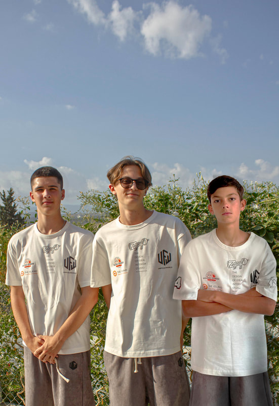
T31: Island Racing Team Country: Cyprus SCHOOL: The Island Private School of Limassol
Island Racing Team, based in Limassol, Cyprus, is a five-member team from The Island Private School of Limassol. Representing Cyprus, the team brings together students with a shared passion for STEM and motorsport. Although details of their competition history and car development are limited, their participation in the 2025 STEM Racing World Finals marks a significant milestone.
With members aged between 13 and 18, including Tymur and Ermis as team managers, the team showcases a blend of youthful energy and leadership. Their collaborative spirit and international outlook reflect the values of their school and the broader STEM Racing community. Island Racing Team is proud to represent Cyprus on the global stage, aiming to make a lasting impression through innovation, teamwork, and determination.

T32: Sirius Scuderia Country: Brazil SCHOOL: Instituto Federal Do Paraná
Sirius Scuderia, from Curitiba, Brazil, is a six-member team aged 16–18. Founded in January 2024, they were inspired by Team Velos and quickly rose to prominence, winning the National Championship. Their name, “Sirius,” refers to the brightest star, symbolising brilliance and determination. Their car, SS-GolfStar, features a dimpled rear surface inspired by golf ball aerodynamics.
Development began after Nationals, with challenges including team member dropouts and funding, resolved through a strategic merger and sponsorship outreach. Innovations include a lap time prediction model and portable reaction test system. Sirius Scuderia is unique for applying advanced aerodynamics and for being the only public school team among Brazil’s World Finalists. Their proudest moment was winning Nationals. Dream careers include motorsport engineering. Their favourite moment was seeing their hard work pay off during competition, strengthening their bond as teammates and friends.
@sirius_scuderia

T33: Instinct Racing Country: China
Instinct Racing, from Beijing, China, is a six-member team aged 16–18. Formed about a year ago, they placed third at Nationals and qualified for the World Finals. Their name reflects racing as a natural instinct. Their car is unnamed, and they do not have a mascot. Development lasted 2–3 months, with challenges in CNC manufacturing, solved through local partnerships.
Instinct Racing is unique for its active mindset and cohesive teamwork. Their proudest moment was placing third nationally. Dream careers include working in Formula 1 or civil aviation. Their favourite moment was quietly polishing their car while listening to music—a peaceful reflection of their dedication.
@instinct_racing2025
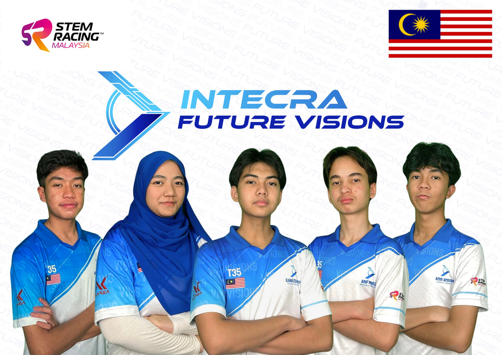
T34: Aeros Racing Country: United States of America SCHOOL: Affiliated with University of Chicago Laboratory Schools
Aeros Racing, from Chicago, USA, is a six-member team aged 15–18. Founded in 2022, they’ve won multiple national titles and placed 13th at the 2024 World Finals. Their name evolved from “Arrows” to “Aeros,” highlighting their focus on aerodynamics. Their car, AW-25, was developed using data-driven design and performance modelling.
Development began after the 2024 World Finals, with challenges including sponsorship losses due to economic shifts. They pivoted to in-kind partnerships and mentorships. Innovations include a prong-based wheel support system, profitability models for scoring, and Earned Media Value strategies. Aeros Racing is unique for being entirely student-led, with no school funding. Their proudest moment was winning the knockout competition at Nationals. Dream careers include engineering, team management, and strategy. Their favourite moment was meeting Oscar Piastri and connecting with global teams, reinforcing their passion for motorsport and STEM outreach.
@aeros_racing
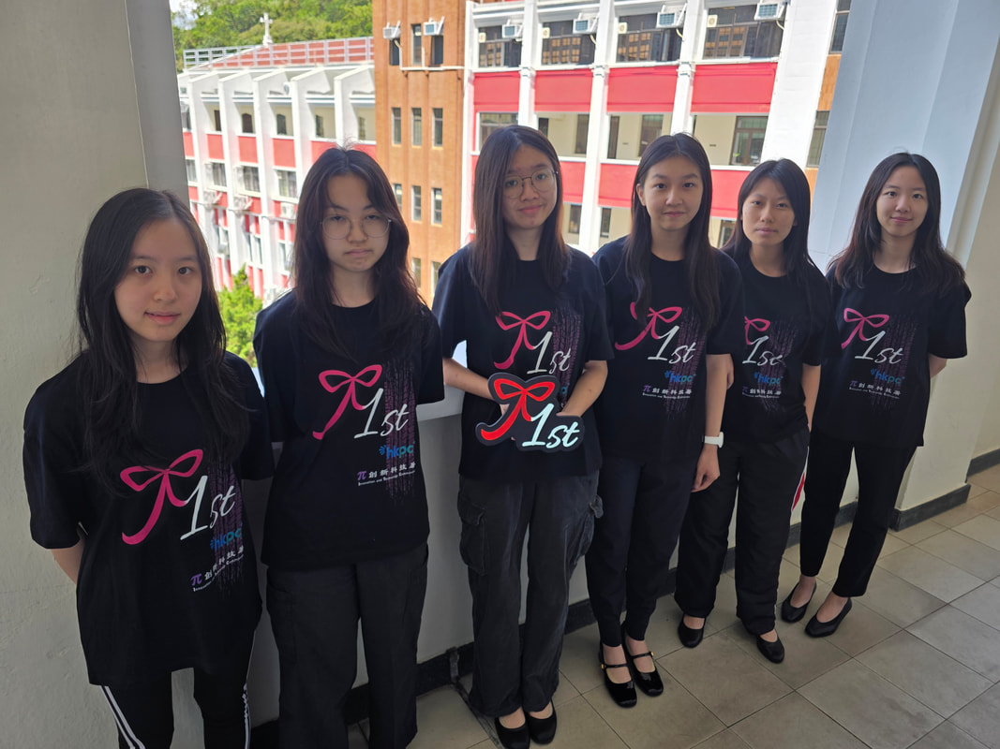
T35: INTECRA Country: Malaysia SCHOOL: SMK Seksyen 9, Shah Alam
INTECRA, from Shah Alam, Malaysia, is a five-member team aged 15–16. Formed a year ago, they’ve won regional and national awards, including Best Pit Display and Best Verbal Presentation. Their name stands for Intelligence, Technology, and a New Era. Their car, AEROBYTE X, reflects three years of development and refinement. Their mascot, Albert, is an AI assistant featured in their pit display and social media.
Development followed a three-phase cycle: research, design, and manufacture. Challenges included CFD simulation bugs, solved through alternate solvers and validation scripts. Innovations include annealed halo components and interactive AI tools. INTECRA is unique for blending technical excellence with human-centred design. Their proudest moment was winning Best Verbal Presentation at Nationals. Dream careers include engineering, architecture, and AI development. Their favourite moment was witnessing a rare dead heat at Nationals, inspiring their pursuit of precision.
@intecra_f1

T36: Roosevelt Racers Country: United States of America SCHOOL: Eleanor Roosevelt High School
Roosevelt Racers, from New York, USA, is a six-member team aged 16–18. With a legacy dating back to 2017, the current team formed in 2024 and placed second at Nationals. Their name honours Eleanor Roosevelt and their school’s history. Their car, Eleanor, continues a tradition of naming cars after Roosevelt figures.
Development began in April, with challenges in team coordination during summer, solved through advanced planning. Innovations include a bearing tester, hot wire cutter, and STEM workshops for younger students. Roosevelt Racers are unique for their urban identity and diverse team makeup. Their proudest moment was placing second at Nationals. Dream careers include project management and engineering. Their favourite moment was launching their car and seeing their efforts validated
@rooseveltracers

T37: TEAM GEAR ONECountry: Brazil SCHOOL: SESI SENAI Civit - Espirito Santo
TEAM GEAR ONE, from Serra, Brazil, is a six-member team aged 16–18. Founded in 2019, they’ve competed in five national events and qualified for the World Finals for the first time in 2025. Their name symbolises unity, with the motto “The unity that drives us.” Their car, Gear SR-1, marks their debut on the global stage. Development began in March, with challenges including a failed paint job, resolved by remanufacturing the car in one week.
Innovations include a bearing testing mechanism to select optimal wheel components. TEAM GEAR ONE is unique for its perseverance and commitment to helping rookie teams. Their proudest moment was becoming Brazilian Vice-Champions. Dream careers include motorsport engineering and social impact roles. Their favourite moment was the tension and excitement during race launches, capturing the spirit of competition.
@team.gearone

T38: Ladies First Country: Hong Kong SCHOOL: Marymount Secondary School
Ladies First, from Hong Kong, is a six-member all-female team aged 14–17. Formed in 2024, they won Development Class and placed seventh in Professional Class. Their name reclaims the phrase “Ladies First” to mean women leading in STEM. Their car, Wu Zetian, is named after China’s only female emperor, symbolising heritage and empowerment.
Development began in February, with challenges in manufacturing research, which they overcame through planning. Innovations include an aerodynamic floor and a custom project management system. Ladies First is unique for being Hong Kong’s first all-girls team and for their sustainability focus. Their proudest moment was winning Development Class. Dream careers include engineering, game design, and cybersecurity. Their favourite moment was bonding with another team through playful pit display pranks, showing how STEM Racing fosters friendship and fun.
@ladiesfirst_sr
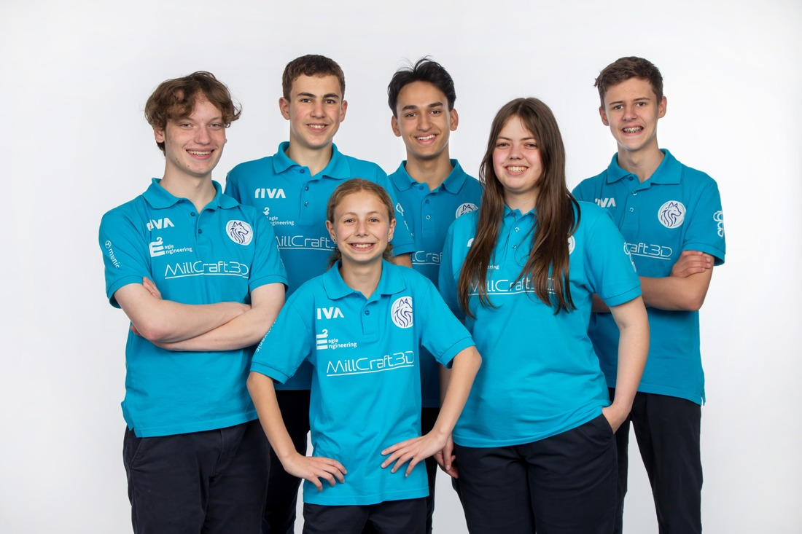
T39: Blue Wolves Country: Germany SCHOOL: Gymnasium in der Taus Backnang
Blue Wolves, from Backnang, Germany, is a six-member team aged 11–18. Competing since 2023, they’ve won the German Junior Championship twice and became the first Senior Class champions in 2025. Their name symbolises focus and teamwork, with “Blue” for calm precision and “Wolves” for unity. Their car, Blue Wolf 25.3, is the third version this season.
Development lasted four months, with challenges in weight optimisation, solved through axle redesign. Innovations include 3D-printed rear jets and a steering system prototype. Blue Wolves are unique for their branding, including a multilingual team anthem and chatbot. Their proudest moment was winning Nationals. Dream careers include roles in Formula 1. Their favourite moment was the announcement of their qualification for the World Finals.
Development lasted four months, with challenges in weight optimisation, solved through axle redesign. Innovations include 3D-printed rear jets and a steering system prototype. Blue Wolves are unique for their branding, including a multilingual team anthem and chatbot. Their proudest moment was winning Nationals. Dream careers include roles in Formula 1. Their favourite moment was the announcement of their qualification for the World Finals.
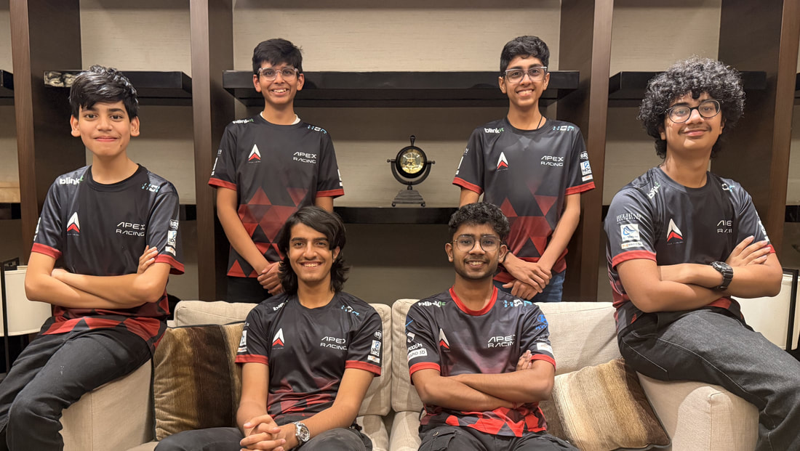
T40: Apex Racing Country: India
APEX Racing, from India, is a six-member all-male team aged 14–17. Established in 2020, they’ve consistently placed in the top 10 nationally and won the Fastest Car Award in 2024. Their name refers to the apex of a racing corner, symbolising precision and peak performance. Development of their car took 3–4 months, with major setbacks including the departure of their team manager and mentor.
They rebuilt their car and deliverables from scratch, regaining momentum through full-day meetings and strategic social media growth. Innovations include a PET fusion machine for recycling plastic into filament, AI generative design, and MDF mini car kits. APEX Racing is unique for its resilience and ability to overcome critical challenges. Their proudest moment was completing all deliverables under pressure. Dream careers include F1 car design, mechanical engineering, and business. Their favourite moment was winning Nationals and proving their strength as a team.
@teamapex.india
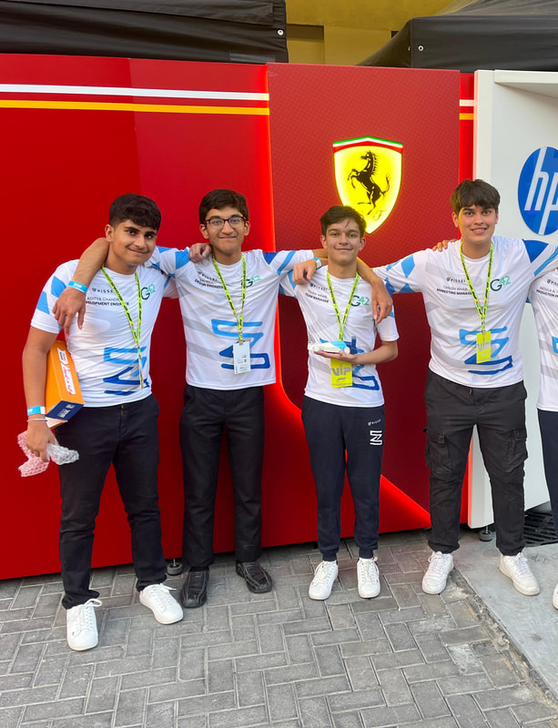
T41: Team Zephyros Country: United Arab Emirates SCHOOL: Raha International School Gardens Campus
Team Zephyros, from Abu Dhabi, UAE, is a four-member team aged 16–18. With three years of experience, they’ve won multiple national awards and qualified for the World Finals. Their name, derived from the Greek god of wind, reflects speed and vision. Their car, Zephyr One, symbolises unity and collective effort.
Development began in October 2023, with challenges including delayed testing and team separation during summer, resolved through contingency planning. Innovations include a native race model coded from scratch and sustainability initiatives with local companies. Zephyros is unique for its engineering-led identity and resilience. Their proudest moment was winning Nationals and bonding through car development. Dream careers include engineering and team leadership. Their favourite moment was qualifying for the World Finals and reflecting on their growth.
@teamzephyros
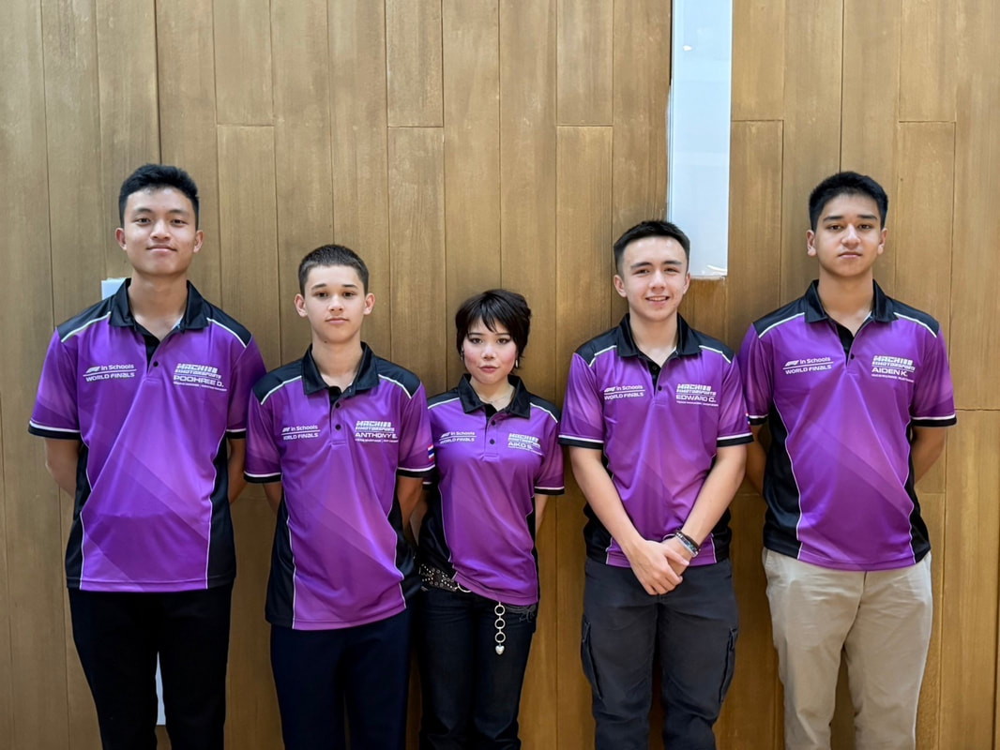
T42: Mach Motorsports Country: Thailand SCHOOL: Charter International School
Mach Motorsports, from Bangkok, Thailand, is a five-member team aged 17–18. Formed in 2024, they placed second at Nationals and won Best Team Identity. Their name, “Mach,” refers to speeds relative to sound, symbolising performance and precision. Their car, Mach One, represents breaking barriers.
Development spanned four months, with challenges including their team manager relocating to the UK, solved through online collaboration. Innovations include sustainability events with Ecca and launching a device into the Chao Phraya River. Mach Motorsports is unique for its professional branding and environmental focus. Their proudest moment was securing sponsorship and achieving sustainability goals. Dream careers include aerospace, piloting, and motorsport. Their favourite moment was winning sponsorship and seeing their ideas come to life.
@machmotorsportsth
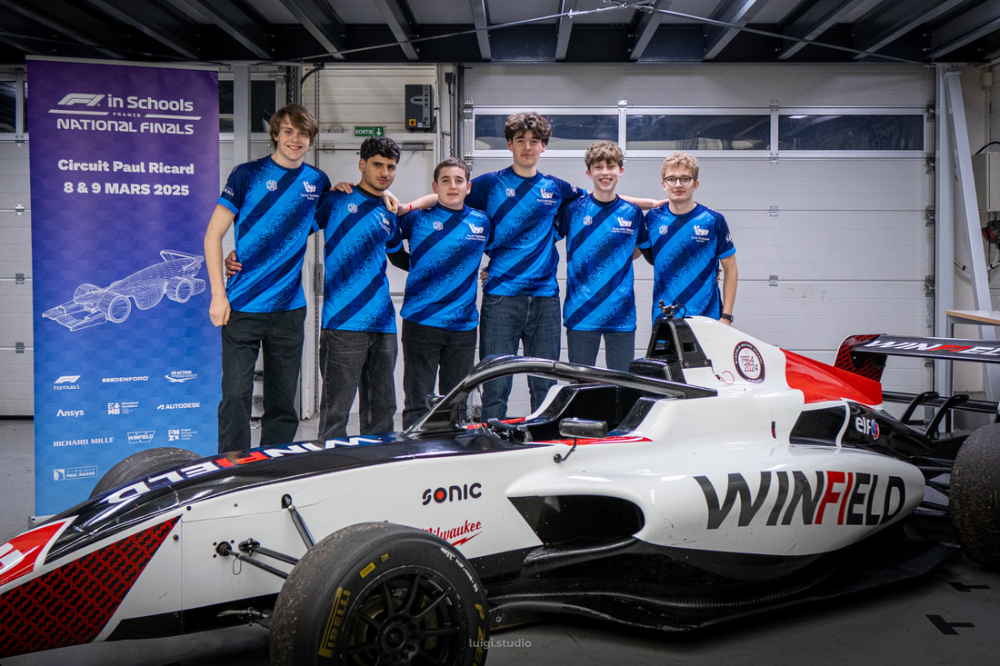
T43: LLP Racing Country: France SCHOOL: Lycée Louis Pasteur
LLP Racing, from Avignon, France, is a three-member all-male team aged 15–18. Formed in 2023, they placed second nationally and won awards for project management, engineering, and digital media. Their name comes from Lycée Louis Pasteur, their school, and reflects their passion for motorsport. Their car, ERA, symbolises a new chapter on the international stage.
Development began in April, with challenges in securing funding, overcome through creative outreach and partnerships. Innovations include multi-material 3D printing and a refined diffuser design. LLP Racing is unique for its balance of engineering and professional project management. Their proudest moment was winning the Honorary Award and qualifying for the World Finals. Dream careers include engineering, law, and business. Their favourite moment was hearing their name announced as Vice-Champions of France, a culmination of teamwork and dedication.
@llpracing.off
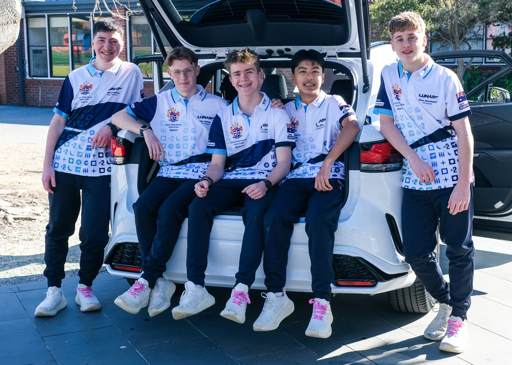
T45: Lunar Country: Australia SCHOOL: Brighton Grammar School
Lunar, from Brighton Grammar School in Australia, is a five-member team aged 17. Competing since 2022, they’ve won two National Finals and placed third at the 2024 World Finals. Their name symbolises engineering ambition, inspired by astronauts and Indigenous Australian traditions. Their car, Japarra, means “moon and stars” in Tiwi, honouring First Nations heritage. Their mascot, Lunar Larry, is a recycled costume referencing Buzz Lightyear. Development began in June, with CNC breakdowns resolved by travelling across Melbourne to complete manufacturing. Innovations include aluminium wheels produced via laser powder bed fusion in collaboration with Monash University. Lunar is unique for its cultural representation and technical excellence. Their proudest moment was placing third at the World Finals and attending the Qatar Grand Prix. Dream careers include engineering and architecture. Their favourite moment was the team photo at the World Finals, capturing their unity and ambition.
@lunar.australia
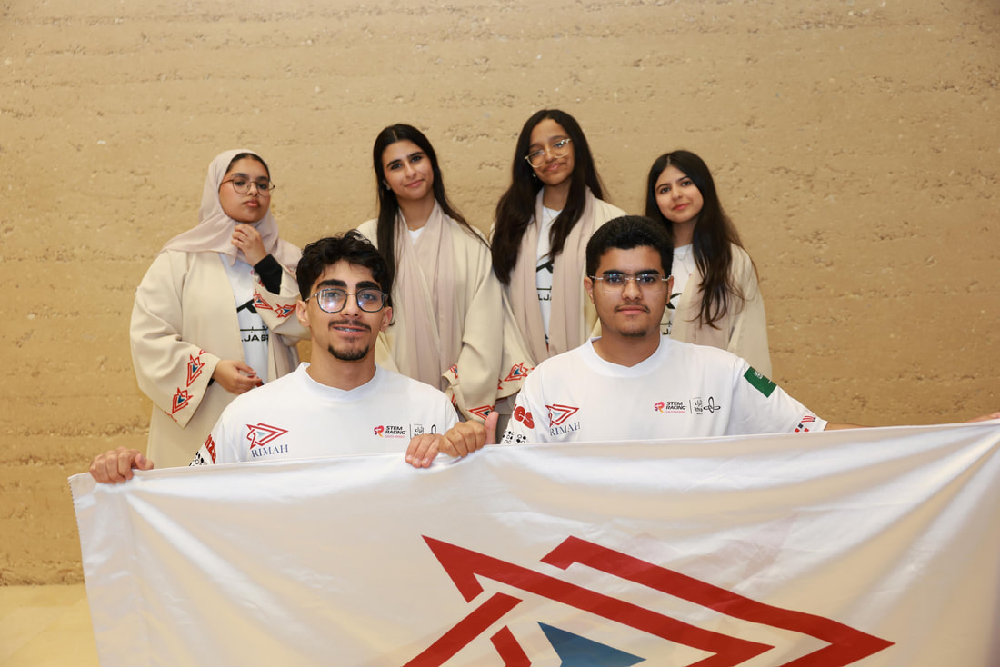
T46: Rimah Country: Saudi Arabia SCHOOL: STEM Racing Saudi
Rimah, from Khobar, Saudi Arabia, is a six-member team aged 14–17. Formed in 2025, they won Regionals and Nationals, earning awards for fastest car and reaction time. Their name means “spear” in Arabic, symbolising precision and strength. Their car, Saqr, is named after the falcon, representing speed and Arabian heritage. Their mascots, Deem and Saad, represent sustainability and technology.
Development lasted two and a half months, with challenges including limited sponsorship, solved through in-kind support. Innovations include aerodynamic shaping, vapour smoothing, and themed marketing items like prayer beads and charms. Rimah is unique for its mindset and perseverance, blending cultural identity with technical excellence. Their proudest moment was seeing their car come to life and winning Nationals. Dream careers include engineering, medicine, and creative industries. Their favourite moment was watching their car race for the first time, a symbol of their hard work and unity.
@rimah_rc

T47: MACH10 Country: Singapore SCHOOL: Global Indian International School
MACH10, from Singapore’s Global Indian International School, is a five-member team aged 16–18. Founded in 2024, they placed second at Nationals and won multiple awards. Their name references the speed of sound and the film Top Gun: Maverick. Their car, Darkstar, is named after the film’s hypersonic jet. Their mascot, Velocitron, is a futuristic robot inspired by Transformers and their car’s aerodynamic profile.
Development began in January, pivoting from Nationals to World Finals preparation. Challenges included exam clashes and manufacturing delays, solved through task division and scheduling. Innovations include a digital racing game and precision machining tools. MACH10 is unique for being their school’s first team to reach the World Finals, with a strong identity and resilience. Their proudest moment was seeing their car outperform previous designs. Dream careers include aerospace, AI, and marketing. Their favourite moment was appearing on national television to promote STEM Racing.
@t3ammach

T48: Koru Racing Country: New Zealand SCHOOL: Saint Kentigern College
Koru Racing, from Auckland, New Zealand, is a three-member team aged 17–18. Founded in April 2024, they became national champions and won the Fastest Car Award at the Australian Nationals. Their name, “Koru,” refers to the spiral of a silver fern, symbolising growth and strength in Māori culture. Their car, KR4, is the fourth generation of their design.
Development began in July, with daily testing and refinement. Sponsorship was a major challenge, overcome through persistent outreach. Innovations include vortex generators, nozzle-style rear wings, and a mathematical car motion model. Koru Racing is unique as New Zealand’s first team to reach the World Finals, proudly representing Kiwi ingenuity. Their proudest moment was winning the Fastest Car Award in Australia. Dream careers include software engineering and entrepreneurship. Their favourite moment was hosting their school’s STEM Racing competition, inspiring future teams to follow in their footsteps.
@koruracing.nz

T49: Nexus Racing Team Country: Greece SCHOOL: Anatolia College, 1st General Lyceum Xilokastro
Nexus Racing, from Thessaloniki, Greece, is a five-member team aged 15–18. Formed from two experienced teams, they qualified for the World Finals after months of collaboration. Their name, “Nexus,” means connection, symbolising unity across distance and difference. Their car, Paralus, is named after an ancient Athenian ship, representing honour and teamwork.
Development began in summer, with challenges including time constraints and high costs. Innovations include aerodynamic wing shapes, lightweight 3D-printed parts, and unique branding. Nexus Racing is unique for its strong teamwork and creative problem-solving. Their proudest moment was qualifying for the World Finals and securing sponsorships through community engagement. Dream careers include engineering and design. Their favourite moment was competing at Nationals and seeing their efforts come to life, proving that collaboration and resilience can overcome any challenge.
@nexusracing2025
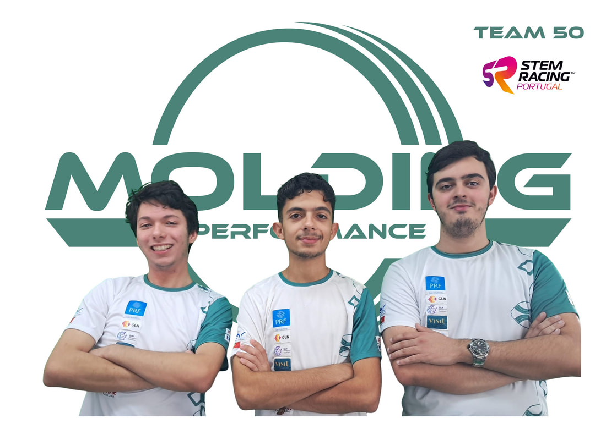
T50: Molding Performance Country: Portugal
Molding Performance, from Leiria, Portugal, is a three-member team aged 17–19. Competing since 2022, they’ve won three consecutive regional championships and placed on the national podium twice. Their name reflects the local mould industry and their engineering ethos. Their car, MP-25 RCC, is named after a supportive professor.
Development lasted four months, with challenges in documentation, resolved through teacher support. Innovations include a proposed AI team and a strong regional identity showcased in their pit display. Molding Performance is unique for its resilience and pride in representing their community. Their proudest moment was winning second place nationally. Dream careers include IT, automotive sales, and software development. Their favourite moment was standing on the national podium, a symbol of their growth and determination.
@molding_performance
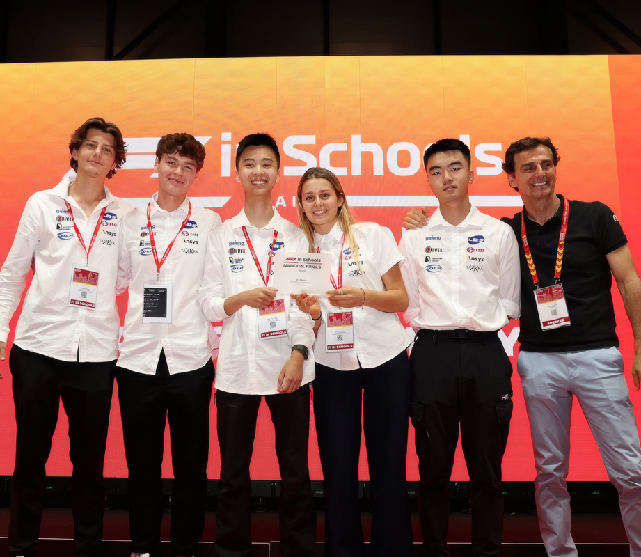
T51: LYNX Country: Spain SCHOOL: American School of Barcelona
LYNX, from Barcelona, Spain, is a five-member team aged 17–18. Formed in October 2024, they placed third at Nationals and won Best Engineered Car and R&D. Their name honours the Iberian lynx, their school mascot and a symbol of Spanish wildlife. Their car, LR02, continues a naming system based on development stages. Their mascot is a lynx, reinforcing their identity.Development began in June, with challenges in part tolerances, resolved through supplier collaboration. Innovations include a CO₂ test rig and volumetric lattice structures. LYNX is unique for its strong values and sponsor relationships. Their proudest moment was matching the fastest time from the previous World Finals. Dream careers include engineering, law, and design. Their favourite moment was assembling their car and seeing their hard work come together.
@lynxracing.spain
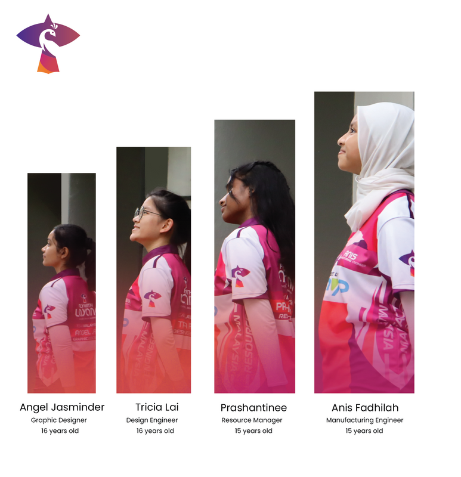
T52: LAYANG Country: Malaysia SCHOOL: SMK Bandar Putra
Layang, from Kulai, Malaysia, is a four-member all-female team aged 15–16. Formed in 2023, they became National Champions in 2025, winning Best Enterprise. Their name means “to fly” in Malay, inspired by traditional wau kites. Their car, Langit, symbolises reaching new heights. Their mascot, Skyle, is a peacock-kite hybrid designed to connect with younger audiences. Development spanned six months. Challenges included gender bias, which they overcame by proving their capability and gaining media support. Innovations include a screw-fastened double bearing wheel system and SkyleSync, a verbal presentation timing watch. Layang is unique for its energy, multicultural makeup, and advocacy for inclusivity, including support for visually impaired students. Their proudest moment was winning Nationals and bonding through shared cultural experiences. Dream careers include architecture, engineering, and marine technology. Their favourite moment was practising their presentation roadside - an unforgettable lesson in time management.
@FlyWithLayang
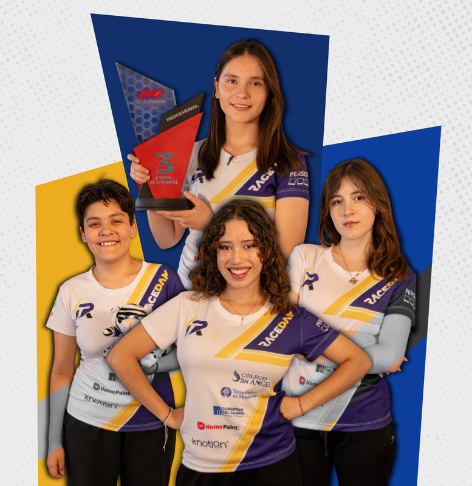
T53: RACEDAM RACING TEAM Country: Mexico SCHOOL: Colegio San Ángel
RACEDAM, from Puebla, Mexico, is a four-member all-female team aged 17–18 from Colegio San Ángel. Founded in 2023, they’ve earned awards for digital media, innovation, and social responsibility. Their name is an acronym of their core values: Respect, Love, Creativity, Entrepreneurship, Dynamism, Friendship, and Goals. Their car, R∆ Evo, symbolises change and evolution. Their mascot, Raven Raya, is a white tiger representing strength and resilience, with plushies sold to fundraise.
Development spanned four months, with challenges including late confirmation of World Finals qualification and financial constraints. Innovations include recycled PET uniforms and a spiral wheel suspension system. RACEDAM is unique for its social impact, working with cancer and food bank charities, and promoting breast cancer awareness. Their proudest moment was qualifying for the World Finals. Dream careers include cinema, engineering, and entertainment management. Their favourite moment was racing together and feeling the adrenaline of competition.
@racedam_rt
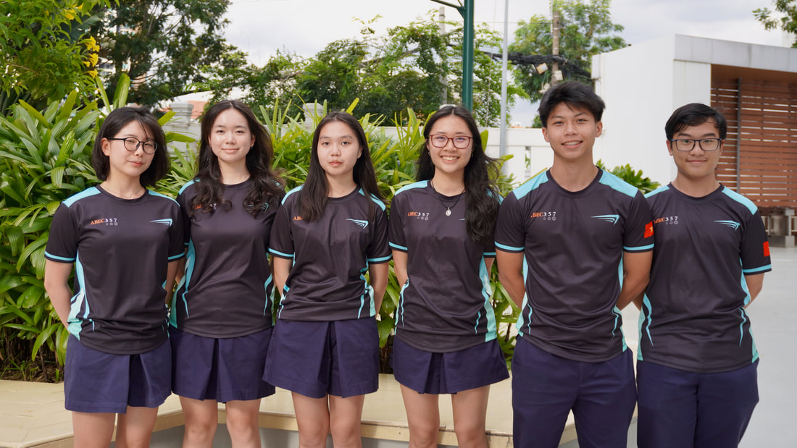
T54: Mercury VN Country: Vietnam SCHOOL: British International School Ho Chi Minh City
Mercury VN, from Ho Chi Minh City, Vietnam, is a six-member team aged 17–18. Formed through a shared passion for STEM, they won the Vietnam Nationals and qualified for the World Finals. Their name honours Mercury, the Roman god of commerce and communication. Their car, Stratos, is named after the stratosphere and pays tribute to their teacher.
Development spanned eight months, with challenges in structural failure, resolved through design review and collaboration. Innovations include detachable wings, cantilever axles, and honeycomb-spoke wheels. Mercury VN is unique for its pursuit of excellence and cultural symbolism. Their proudest moment was expanding STEM Racing in Vietnam. Dream careers include engineering, law, architecture, and mathematics. Their favourite moment was seeing their car break the 1.2-second barrier, a testament to teamwork and precision.
@mercuryf1_vn

T55: SPYKAR Country: China
SPYKAR, from Shanghai, China, is a six-member team aged 16–17. With a legacy dating back to 2017, they’ve consistently ranked highly in national and international competitions. Their name stands for Science, Passion, Youth, Knowledge, Action, and Revolution. Their car, unnamed, was developed through multiple iterations, with final assembly completed in September. Their mascots, SPY and KAR, are teddy bears representing logic and warmth. A major challenge was losing engineering drawings to file corruption, which they overcame through risk management planning.
Innovations include aerodynamic sidepods inspired by Ferrari’s F1-75 and a wing-style rearpod. SPYKAR is unique for its tailored sponsorship ROI strategies and creative outreach. Their proudest moment was winning the National Championship and qualifying for the World Finals. Dream careers include engineering, architecture, and aviation. Their favourite moment was hearing their name announced as champions, fulfilling a long-held ambition.
@25spykar

T56: LUMINOX Country: Spain SCHOOL: Institución Educativa SEK, S.L.
LUMINOX, from Madrid, Spain, is a four-member team aged 17. Formed in October 2025, they placed second at Nationals and won awards for fastest car and team identity. Their name combines “lumi” (light) and “nox” (darkness), symbolising unity through contrast. Their car, Freya, is named after the Norse goddess of love and beauty.
Development spanned two months, with challenges in sponsorship, solved through creative outreach. Innovations include a music-themed pit display and engaging activities to make STEM Racing more accessible. LUMINOX is unique for highlighting the creative side of STEM and embracing diversity. Their proudest moment was launching their car at Nationals and exceeding expectations. Dream careers include F1 aerodynamics, marketing, and data analysis. Their favourite moment was seeing Propex Racing go P1 at the World Finals, inspiring their own ambitions
@Luminox_es

T57: ORAMA Country: Greece SCHOOL: Anatolia College, 1st General High School of Xanthi,Andriotis School
ORAMA, from Thessaloniki, Greece, is a six-member team aged 14–18. Formed from three regional teams, they qualified for the World Finals through collaboration. Their name means “vision” in Greek, symbolising ambition and unity. Their car is unnamed but features aerodynamic innovations. Development lasted two months, with challenges in time management, solved through structured meetings and project tracking.
Innovations include smoke testing and slow-motion analysis. ORAMA is unique for its smooth workflow and strong team chemistry. Their proudest moment was successfully testing their car and seeing their vision come to life. Dream careers include aerospace engineering. Their favourite moment was realising how much they’d grown through the competition, valuing knowledge and teamwork over awards.
@orama_stemracing
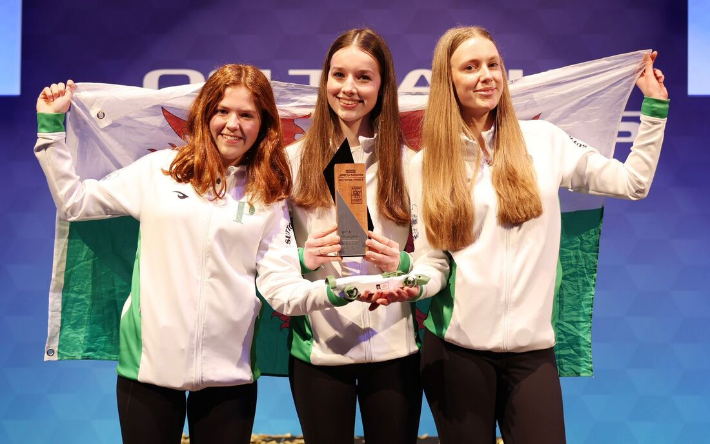
T58: Parabolica Country: Wales SCHOOL: Bro Edern
Parabolica, from Cardiff, Wales, is a three-member all-female team aged 16. Formed in 2022, they’ve competed for three seasons, winning awards for engineering, portfolios, and becoming Welsh Champions. Their name is inspired by the final curve at Monza’s Temple of Speed. Their car, PB4, follows a naming convention similar to real F1 cars.
Development began in June, immediately after GCSEs. A major challenge was a wheel detaching during Regionals, which they overcame with a spare car. Their pit display is a standout feature - an escape room-style experience where visitors solve clues to unlock the car. Parabolica is unique for its mission to inspire girls in STEM and motorsport. Their proudest moment was winning the Portfolio Award at Nationals. Dream careers include law, aeronautics, and working in Formula 1. Their favourite moment was being told “See you in Singapore!” after winning the Welsh title, confirming their place at the World Finals.
@broedern_parab_

T59: Sadeem Country: Saudi Arabia SCHOOL: STEM Racing Saudi
Sadeem, from Khobar, Saudi Arabia, is a six-member team aged 15–17. Formed in 2024, they placed third at Nationals and won the Research & Development Award. Their name means “nebula,” symbolising limitless potential. Their car, Najm, means “star,” and their mascots, Deem and Saad, represent sustainability and technology.
Development began in August, with challenges in team coordination and budget, solved through sponsorship and redesign. Innovations include shark denticle wings, acetone smoothing, and AI-assisted project management. Sadeem is unique for its cultural diversity and collaborative spirit. Their proudest moment was placing on the national podium. Dream careers include engineering and creative industries. Their favourite moment was hearing their name called at Nationals, confirming their hard work and unity.
@sadeemracing
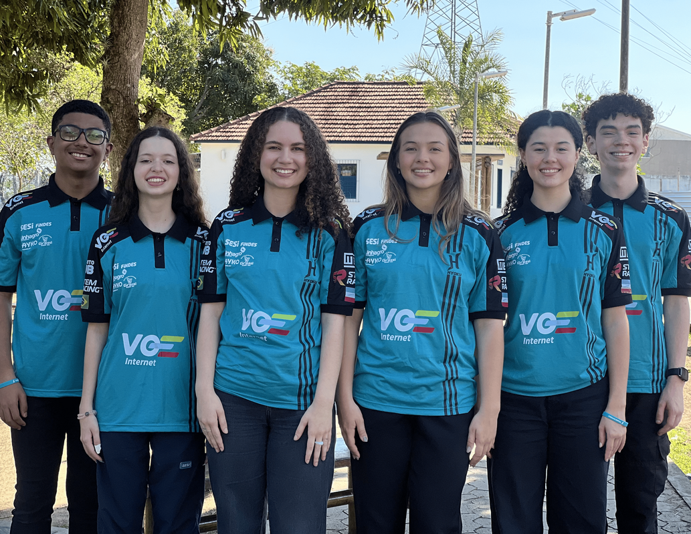
T60: TEAM HYOKU Country: Brazil SCHOOL: SESI Linhares
TEAM HYOKU, from Linhares, Brazil, is a six-member team aged 16–17. Competing since 2019, they placed third nationally in 2025 and won Best Engineering. Their name comes from an oriental legend about a bird needing another to fly - symbolising teamwork and unity. Their car, HK-W1, marks their first World Finals appearance.
Development lasted five months, with challenges in prototype selection, resolved through analysis and resilience. Innovations include a game made from polyurethane powder and resin, repurposing toxic waste into educational tools. HYOKU is unique for its sustainability focus and collaborative management. Their proudest moment was qualifying for the World Finals, fulfilling a long-held dream. Dream careers include engineering, pharmaceuticals, and business leadership. Their favourite moment was winning an engineering award and seeing their hard work recognised, motivating them to continue growing and inspiring others.
@team_hyoku
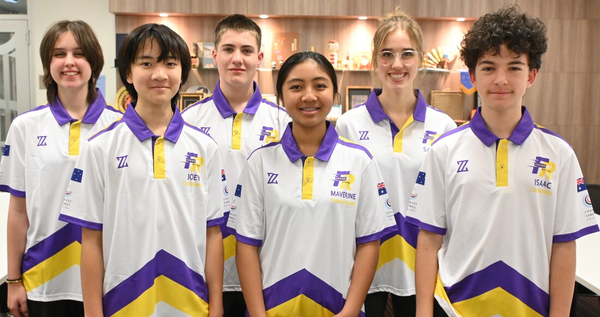
T61: Fusion Racing Country: Australia SCHOOL: Charles Campbell College
Fusion Racing, from Paradise, Australia, is a six-member team aged 14–15. Formed from previous cadet teams, they won the 2025 Development Class National Finals. Their name reflects the fusion of skills and experiences. Their car, FR-61, was developed over 2.5 months. Challenges included CNC misalignment and foam warping, solved through custom 3D-printed tools. Innovations include a slingshot propulsion system, recycled CO₂ canister merchandise, and a halo deceleration system. Fusion Racing is unique for its sustainability focus and being the only public school representing Australia. Their proudest moment was winning Nationals. Dream careers include Formula 1 engineering, dentistry, and screenwriting. Their favourite moment was receiving their World Finals invitation, marking a historic achievement for their school.
@fusion.racing23

T62: SUPERCHARGED Country: India SCHOOL:
SUPERCHARGED, from New Delhi, India, is a five-member team aged 13–14. Founded in January 2024, they placed second at Nationals and won awards for marketing and research. Their name reflects energy, innovation, and performance. Their car, Dasher, continues a tradition of naming cars after Santa’s reindeer, linking to their mascot.
Development spanned 37 days, with challenges including time management, regulation compliance, and sponsorship. Innovations include an NFC-enabled pit booth, a split bearing system, and STEM Racing kits for younger students. SUPERCHARGED is unique for its strong branding and outreach. Their proudest moment was being invited to an F4 race and meeting industry professionals. Dream careers include engineering, marketing, and real estate. Their favourite moment was seeing their car perform at Nationals, proving their hard work and creativity.
@SUPERCHARGEDF1_TBS
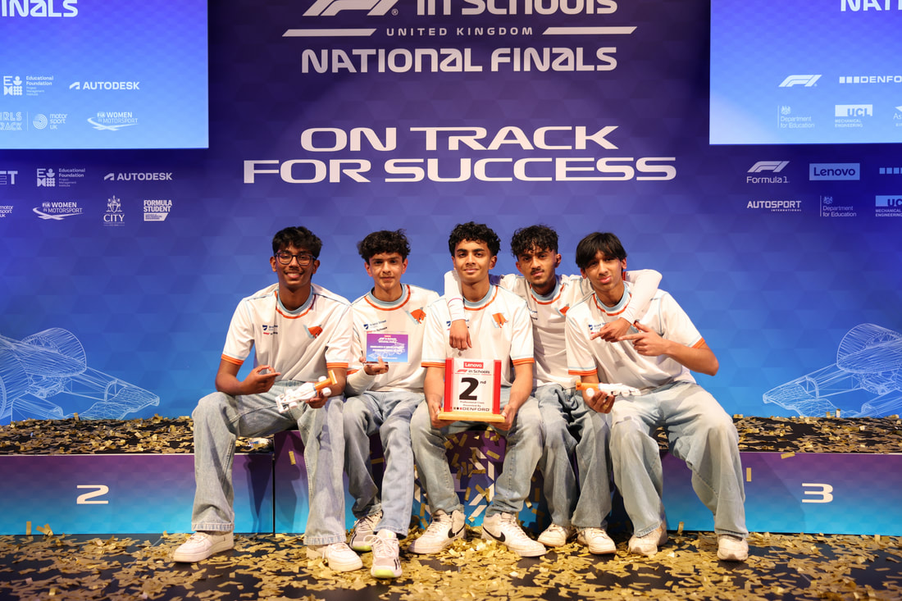
T63: Tori Veloci Racing Country: United Kingdom SCHOOL: St Olave's Grammar School
Tori Veloci Racing, from Orpington, England, is a five-member team aged 17–18. Formed in 2022, they’ve progressed through entry, development, and professional classes, placing second nationally in 2025. Their name, Italian for “fast bulls,” pays homage to motorsport heritage and bold design. Their car, Velocissima, represents peak performance. Their mascot, Bosco Baptise Belissimo Eugene Antonio, is a teddy bull named after an Italian saint. Development spanned over four months, with challenges in deadline management. Innovations include repurposed CO₂ canisters for flowerpots and a culturally rich brand identity. Tori Veloci is unique for its blend of Indian backgrounds and Italian branding. Their proudest moment was placing second at Nationals. Dream careers include aerospace engineering. Their favourite moment was standing on the podium, celebrating their hard-earned success.
@tori.veloci.racing

T64: Pegasus Country: Hong Kong SCHOOL: United Christian College (Kowloon East)
Pegasus, from Kowloon, Hong Kong, is a six-member team aged 15–16. Formed in June 2024, they placed second at Regionals and participated in the UK Nationals as guests. Their name, inspired by the winged horse of Greek mythology, symbolises innovation and ambition. Their car, Pegasus Skyline, merges their original dream name with their current identity. Development began in December and lasted until August. A major challenge was losing ABS parts in customs, which they overcame by 3D printing replacements overnight. Innovations include interactive pit games, AI-generated racing avatars, and a double-ramp sidepod design. Pegasus is unique for its international experience and commitment to inspiring future teams. Their proudest moment was attending the UK Nationals and learning from top competitors. Dream careers include motorsport leadership and technology. Their favourite moment was seeing their car race after months of development, proving their ideas could compete globally.
@pegasus_uccke
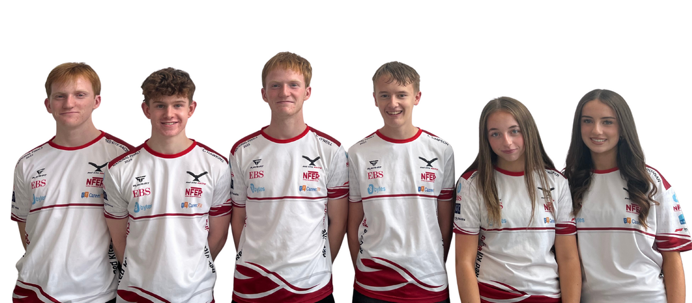
T65: Red Kite Racing Country: Ireland SCHOOL: St. David's Holy Faith Secondary School
Red Kite Racing, from Greystones, Ireland, is a six-member team aged 16–18. Formed in 2023, they previously competed as Eurol Dullahan Racing, placing fourth before returning to win the 2025 National Final. Their name honours the red kite bird, symbolising revival and sustainability, reflecting their local environment. Their car, RKR03, is the third in their design series. Development began in June, with a tight turnaround and logistical challenges, including cutting their pit display in half to fit a van. Innovations include a reduced nose cone and streamlined wing supports. Red Kite Racing is unique for its nature-inspired identity and commitment to environmental awareness. Their proudest moment was winning Nationals after years of effort. Dream careers include piloting, physics, architecture, and engineering. Their favourite moment was hearing their name announced as champions, validating their hard work and determination.
@redkiteracing

T66: Sol de Miami Country: Canada SCHOOL: Strathcona-Tweedsmuir School
Sol de Miami, from Foothills, Canada, is a six-member team aged 16–17. Formed in September 2024 through a physics class, they placed second at Regionals and third at Nationals. Their name evokes vibrancy and energy, inspired by Miami’s warmth and global spirit. Their car, unnamed, was developed from May onwards. Challenges included software errors and scheduling conflicts, resolved through daily syncs and prioritisation.Innovations include keychains made from recycled CO₂ canisters and a bold branding strategy. Sol de Miami is unique for combining classroom structure with independent teamwork, and for their multicultural identity. Their proudest moment was qualifying to represent Canada at the World Finals. Dream careers range from medicine and law to engineering and sailing. Their favourite moment was seeing their car achieve the fastest time in Canada, validating their design and teamwork.
@soldemiamiracing

T67: PRIME RACING Country: Malaysia SCHOOL: SMK Penrissen
PRIME RACING, from Kuching, Malaysia, is a six-member team aged 16, representing SMK Penrissen. Formed in 2023, they’ve won regional titles and placed fifth nationally, qualifying for the World Finals. Their name reflects simplicity, innovation, and indivisibility - core values of their engineering approach. Their cars, Kijat and Tangkas, are named after local words for lightning and agility. Their mascot, Prismo the cat, represents Kuching (Cat City) and embodies agility and curiosity.
Development lasted one month, with challenges including limited resources and access to equipment. Innovations include upcycled spray can badges, STEM workshops for rural students, and recycled pit display materials. PRIME RACING is unique for its deep-rooted friendship and indigenous heritage, which they proudly integrate into their identity. Their proudest moment was winning the Sarawak State Finals. Dream careers include aerospace, architecture, and IT. Their favourite moment was praying together before races, reinforcing their unity and belief.
@primeracingteamf1

T68: Kura Force Country: Costa Rica SCHOOL: Colegio Scientifico
Kura Force, from San José, Costa Rica, is a six-member team aged 16–17. Formed from a selection of top students across four teams, they represent Costa Rica’s first World Finals delegation. Their name, “Kura,” comes from the Boruca word for feline, symbolising agility and strength. Their car, KF-Kábata68, means “moon” in Boruca, representing guidance and creativity. Their mascot, Yökö the ocelot, reflects biodiversity and resilience.
Development spanned three months, with challenges in time and logistics, solved through discipline and mentorship. Innovations include sustainable merchandising, eco-friendly paint testing, and a chatbot. Kura Force is unique for its inclusive project, SteamRacing4All, designed for visually impaired students. Their proudest moment was launching this initiative. Dream careers include engineering, pharmacy, and finance. Their favourite moment was seeing their ideas inspire others, proving that innovation can be inclusive.
@kuraforce
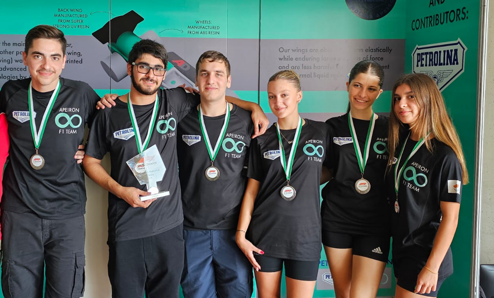
T69: Petrolina Apiron Country: Cyprus SCHOOL: American Academy Larnaca
Petrolina Apiron, from Larnaca, Cyprus, is a six-member team aged 18–19 from the American Academy Larnaca. Formed in October 2023, they placed second at Nationals and secured a World Finals spot in March 2025. Their name combines “Petrolina,” their title sponsor, and “Apiron,” Greek for infinity. Their car, MKM-25, reflects their journey and year.
Development began in March, with challenges including military service and university transitions. Innovations include an IFTTT risk management diagram and strong sponsor partnerships. Petrolina Apiron is unique for being one of the few teams with a title sponsor, enabling access to advanced manufacturing and travel support. Their proudest moment was receiving confirmation of their World Finals qualification. Dream careers include engineering and entrepreneurship. Their favourite moment was the call from their mentor announcing their place at the World Finals, marking the culmination of months of uncertainty and hard work.
@petrolina.apiron

T70: S-Energy Country: Portugal SCHOOL:
S-Energy, from Vila Nova de Famalicão, Portugal, is a six-member team aged 15–17. Formed through a merger of two previous teams, they became National Champions in 2025. Their name derives from “synergy,” reflecting collaboration and unity. Their car, SEC-W25, is the latest in a series of refined designs.
Development began in June, with challenges in scheduling during summer holidays. Innovations include an AR-enhanced pit display and experimental aerodynamic concepts like converging-diverging nozzles. S-Energy is unique for bridging public and private schools and for its perseverance - rising from early eliminations to national victory. Their proudest moment was winning Nationals. Dream careers include motorsport engineering and team management. Their favourite moment was witnessing a thrilling knockout race at last year’s World Finals, inspiring them to bring the award back to Portugal.
@senergy.team

T71: Starpoint Racing Country: Thailand SCHOOL: Bangkok Patana School
Starpoint Racing, from Bangkok, Thailand, is a six-member team aged 16–18. Competing since 2023, they’ve won multiple national awards, including fastest car and best enterprise portfolio. Their name symbolises ambition and precision, with “Star” representing guidance and “Point” reflecting accuracy. Their car, Rama Rocket, honours Bangkok’s interconnected roads and cultural heritage.
Development spanned a year, with challenges including school support, team absences, and military obligations. Innovations include branded merchandise, interactive pit games, and a signature Thai pattern. Starpoint Racing is unique for its independence and cross-functional expertise. Their proudest moment was winning the National Championship. Dream careers include biotechnology, diplomacy, racing, and creative direction. Their favourite moments include late-night calls and team bonding, which strengthened their unity and drive.
@starpointracing

T72: OMNIA VIRTUS Country: Mexico SCHOOL: Centro Escolar El Encino
OMNIA VIRTUS, from Aguascalientes, Mexico, is a six-member team aged 18–19. Competing since 2022, they placed second nationally in 2025. Their name means “all virtues,” reflecting their holistic approach to teamwork and competition. Their car, MKM-25, represents their journey and year. Development began after Nationals, with challenges in fundraising, overcome through persistent sponsor outreach.
Innovations include advanced engineering features and a strong team ethos. OMNIA VIRTUS is unique for its commitment to values and consistency. Their proudest moment was qualifying for the World Finals. Dream careers include mechanical engineering. Their favourite moment was hearing their name announced as runners-up, confirming their hard work and unity.
@omnia_virtus

T73: OWLA Country: Spain SCHOOL: IES José Luis López Aranguren
OWLA, from Fuenlabrada, Spain, is a five-member team aged 13–18 from IES José Luis López Aranguren. Formed in March 2025, they won both the Madrid Regionals and Spanish Nationals in their debut season. Their name combines “OWL” and “HOLA,” symbolising wisdom and international greeting. Their car, VX-73, is named after their team number and features vortex-generating aerodynamics.
Development began post-Nationals, with challenges including broken cars and delayed wheel shipments. OWLA is unique for its rapid success, achieving national victory in under six months. Their proudest moment was winning the knockout competition and qualifying for the World Finals. Dream careers include aerospace engineering, acting, and mathematics. Their favourite moment was hearing their name announced as national champions. OWLA is the first public school team from Spain to reach the World Finals, and they aim to prove that talent and teamwork can overcome any barrier.
@owla_es

T74: Mercury Racing Country: Singapore SCHOOL: Tanglin Trust School
Mercury Racing, from Tanglin Trust School in Singapore, is a five-member team aged 14–17. Formed in 2024, they placed third at Nationals and won Best Digital Media. Their name reflects speed, inspired by the Roman god and the fastest planet. Their car, Mercury Caloris MMXXV, is named after a planetary impact basin. Their mascot, Mark, is a green dinosaur plushie featured in branding.
Development spanned five months, beginning with evaluation of their Nationals car. Sponsorship was a challenge, overcome by targeting SMEs. Innovations include a dual vane sidepod and fin-style rear pods for weight reduction. Mercury Racing is unique for its vintage aesthetic and multicultural team, representing Singapore and several other nations. Their proudest moment was qualifying for the World Finals. Dream careers include law, diplomacy, and engineering. Their favourite moment was seeing their car achieve the fastest time at Nationals, validating their design efforts.
@mercuryracingteam

T75: Zealim Racing Country: Hong Kong SCHOOL: HKFYG Lee Shau Kee College
Zealim Racing, from Tin Shui Wai, Hong Kong, is a six-member all-male team aged 16–17. Formed in 2024, they won their Regional Finals and Best Presentation Award. Their name blends “Zeal” and “Limit,” symbolising passion and overcoming obstacles. Their car, Hornet, reflects their bee-themed identity, with vibrant yellow and black branding.
Development spanned four months, with challenges in balancing school and competition, resolved through structured timetables. Innovations include founding a STEM Racing club to ensure continuity and mentoring future students. Zealim Racing is unique for its all-rounded team, with members contributing across engineering and enterprise. Their proudest moment was establishing a legacy for future competitors. Dream careers include social media management and engineering. Their favourite moment was watching younger students engage with STEM Racing, knowing they had inspired the next generation.
@zealim_racing
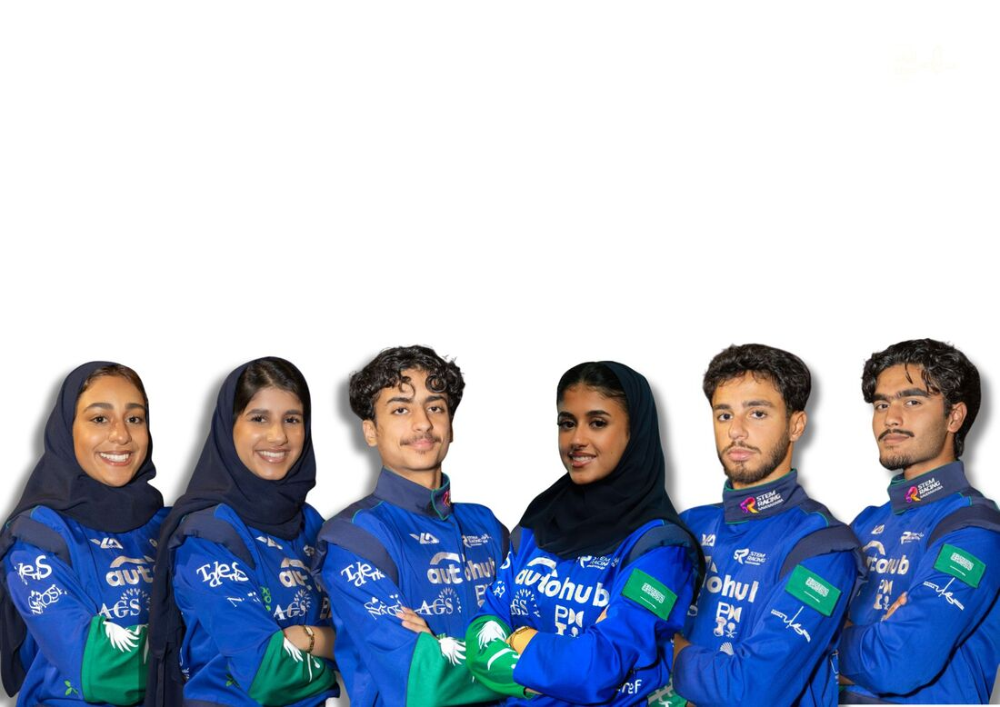
T76: Yla Country: Saudi Arabia SCHOOL: STEM Racing Saudi
Yla, from Khobar, Saudi Arabia, is a six-member team aged 16–19. Competing for three years, they qualified for the World Finals in 2025 after placing fourth nationally. Their name stands for “Youth Living in Acceleration,” and their car, Accelion, reflects speed and vision. Their mascot, Khalid, symbolises eternal ambition.
Development began after Nationals, with challenges including their team leader relocating abroad, solved through remote collaboration and leadership restructuring. Innovations include the YLA Keyboard for productivity and a STEM therapy tool for children with disabilities. Yla is unique for its professional approach and social impact. Their proudest moment was qualifying for the World Finals after years of near misses. Dream careers include team principal and engineering. Their favourite moment was hearing their name announced for the World Finals, a symbol of persistence and growth.
@yla.accelerate

T77: Velkoi Racing Country: Greece SCHOOL: American Farm School, The Moraitis School, 2nd Model Highschool of Athens
Velkoi Racing, from Athens, Greece, is a six-member team aged 16–19. Formed through collaboration between three schools, they’ve competed for a decade and hold the Greek national record for fastest car. Their name combines “velocity” and “koinonia” (community), reflecting speed and unity. Their car, simply named Car A and Car B, was developed from May onwards.Their mascot, SPEEDY, is a miniature F1 racer featured in their branding. Challenges included remote collaboration and scheduling, solved through structured planning and task sharing. Innovations include recycled plastic merchandise and advanced modelling techniques. Velkoi is unique for its diversity and cross-city teamwork. Their proudest moment was winning Nationals and meeting in person for the first time. Dream careers include engineering and medicine. Their favourite moment was the pit display exhibition, where they refined their identity through interaction with other teams.
@Velkoiracing

T78: Synergy Country: Brazil SCHOOL: FourC Bilingual Academy
Synergy, from Bauru, Brazil, is a six-member team aged 14–18. Formed in 2024, they placed second nationally and won awards for engineering, fastest car, and social impact. Their name reflects collaborative strength, with the tagline “Driven Together.” Their car, SYWF-25, represents their journey to the World Finals. Development began in June, with challenges including axle insert failures, solved through creative repair techniques.
Innovations include a new wheel design and STEM outreach kits. Synergy is unique for its blend of technical excellence and community engagement. Their proudest moment was mentoring younger students and expanding STEM Racing in Brazil. Dream careers include engineering, pharmaceuticals, and social entrepreneurship. Their favourite moment was seeing their car break the 1.2-second barrier, a milestone of precision and teamwork.
@synergybr_

T79: Team SW1FT Country: United States of America SCHOOL: Arnold O. Beckman High School
STEM Racing. Founded in 2024, they placed 2nd at the North America Regional Finals and 3rd at the USA & Canada National Finals, earning Best Verbal Presentation and Best Newcomer awards. Their name honours Blue Moon, a pet bird of their founder, symbolising freedom and agility. Their car, simply called SW1FT, reflects speed and endurance, while their mascot, also Blue Moon, embodies boldness and resilience.
Development began in June 2025, with challenges including CNC adaptation and team member changes, overcome through custom fixtures and buffer planning. Innovations include a wind tunnel, Python-based reaction training, and a sponsorship ecosystem. What makes Team SW1FT unique is their persistence and ability to learn everything from scratch. Their proudest moment was hearing their name announced as 3rd place at Nationals, validating their hard work and inspiring their World Finals journey.
@swift.f1is
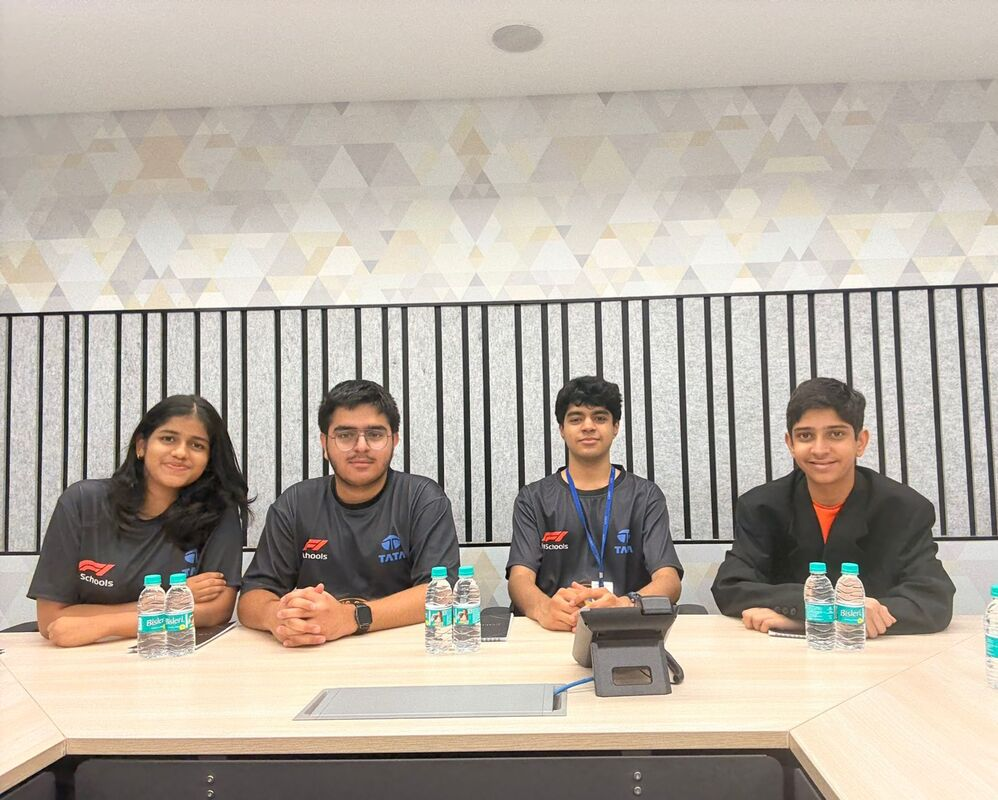
T80: IMPETUS RACERS Country: India
Impetus Racers, from India, is a four-member team aged 13–16 from their school in India. Formed in 2022, they quickly rose through the ranks - placing in the top 25 at Nationals in their debut season, then achieving a top 10 finish the following year. In 2025, they secured 3rd place at Nationals and earned a spot at the World Finals. Their name, “Impetus,” reflects energy and momentum - both physical and motivational.
Development of their World Finals car began in August, using a prototype-based approach and iterative testing. Despite setbacks, including a key team member stepping down, they adapted swiftly and maintained progress. Innovations include a flexible rear wing, modular components, and the Impetus Initiative, an NGO-driven outreach programme. Impetus Racers stand out for their blend of technical excellence, sustainability, and community impact. Their proudest moment was placing 3rd at Nationals and breaking the reaction time record with 0.013s.
@impetusracers

T81: Team Rabbits Country: Italy SCHOOL: Itis Silvio De Pretto
Team Rabbits, from Schio, Italy, is a six-member team aged 19–20 from Itis Silvio De Pretto. Their name was given by a teacher after they skipped a test to focus on competition prep - earning the nickname “Rabbits” for their speed and determination. Their car, RT04, follows a naming system based on competition stages. Their mascot, Arturo the rabbit, wears their historic team T-shirt and joins them at sponsor meetings.
Their proudest moment was receiving praise from judges at Nationals, who called their documentation “perfect” and recognised their unique personality. Team Rabbits is known for their unconventional name, strong identity, and ability to find joy in simple things. While they’re highly determined and competitive, they also value fun and creativity. Their journey reflects a balance of hard work and light-hearted spirit, making them stand out in the STEM Racing community.
@teamrabbits_

T82: Team Phoenix Country: Japan SCHOOL: Fukui Senior High School
Team Phoenix, from Fukui City, Japan, is a four-member all-male team aged 16–18 from Fukui Senior High School. Their name honours the phoenix, the symbol of their hometown, with wings spread wide to represent ambition. Their car, FP-25, stands for Fukui Phoenix 2025. Though they don’t have a mascot, their identity is rooted in simplicity and clarity.
Their proudest experience was participating in the Pit Lane Walk, a moment that connected them with the global STEM Racing community. Team Phoenix is unique for its clean, data-driven design approach, making their development process accessible and engaging to other teams. Their work reflects a thoughtful balance between technical rigour and visual simplicity, aiming to inspire interest and collaboration. With a strong sense of local pride and a clear vision, Team Phoenix brings a quiet strength to the World Finals.
@stemracing_phoenix
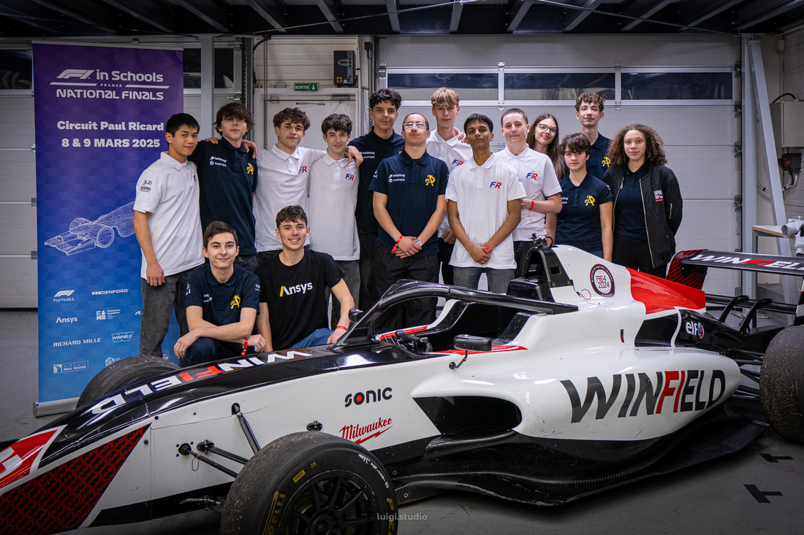
T83: Aeris Country: France SCHOOL: Lycée Jean Mermoz
Aeris, from France, is an eight-member team formed in September 2024 by a group of friends passionate about engineering. They won the French National Finals, earning awards for the fastest car and Women & Sport, securing their place at the 2025 World Finals in Singapore. Their name, Aeris, comes from the Latin word aer, meaning “air,” symbolising fluidity and aerodynamic excellence.
Their car, APEX-evo, blends “Apex” for racing precision and “Evo” for evolution, reflecting their commitment to innovation. Development spanned five months, guided by a structured R&D and production timeline. A major challenge was a legal issue affecting their association’s banking, which they overcame with parental support. Innovations include a refined diffuser, halo airflow optimisation, and sustainable PLA aero parts. Aeris is unique for its diversity, adaptability, and strong team bond. Their proudest achievement is representing France at the World Finals and growing both technically and personally.
@aeris.racing
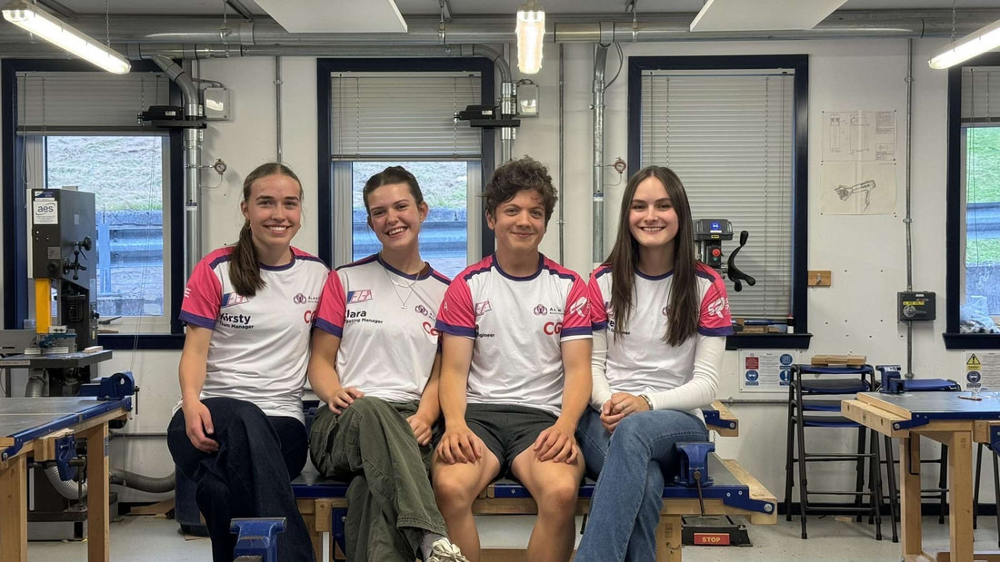
T84: Vega Racing by ASAM Country: Scotland SCHOOL: Linlithgow Academy
Vega Racing by ASAM, from Linlithgow, Scotland, is a four-member all-male team aged 17–18 from Linlithgow Academy. Their name is inspired by the star Vega, a key figure in scientific discovery. Their car, Lyra, is named after the constellation in which Vega resides. Development began in late March, building on skills honed since joining the Pro Class in 2023.
A major challenge was being unable to attend the 2024 World Finals, which they overcame with perseverance and renewed focus. Vega Racing is unique for its long-standing team unity, with all original members still competing together after nearly four years. Their proudest moment was qualifying for the World Finals a second time. Their favourite experience was touring the F1 paddock at the 2024 British Grand Prix, a moment that deepened their passion for motorsport and STEM.
@vegaracing_f1is

T85: Ventaurus Competative Country: United Kingdom SCHOOL: Harrow School
Ventaurus Competitive, from Harrow, England, is a six-member all-male team aged 16 from Harrow School. Their name combines “Venti” (wind spirit) and “Taurus” (bull), symbolising speed, strength, and determination. Their car, Bullseye MK2, reflects their mascot and logo, representing precision and development. Over four months, they faced challenges including warped SLS prints and shattered components, which they overcame through redesign and testing.
Innovations include graphite-coated wheels and a custom formula for optimising wheel shell thickness. Their mascot, Tauro the bull, features prominently in branding and merchandise. Ventaurus Competitive is unique for its commitment to sustainability, operating as a carbon-negative team and collaborating with NGOs. Their proudest moment was winning Best Pit Display at Nationals, a recognition of their identity and creativity. Their favourite experience was seeing their efforts celebrated and inspiring others to pursue a greener future through STEM Racing.